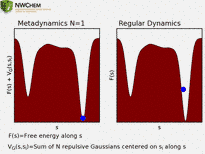
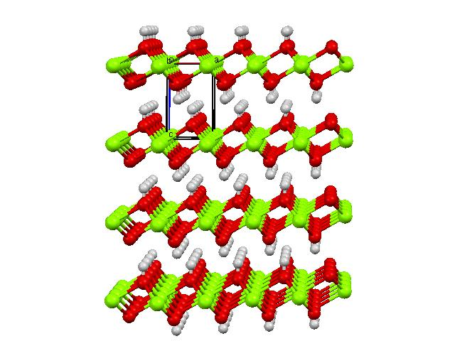

Plane-Wave Density Functional Theory¶
Contents¶
- 1 Pseudopotential plane-wave density functional theory (NWPW)
- 1.1 PSPW Tasks - Gamma Point Calculations
- 1.2 Band Tasks - Multiple k-point Calculations
- 1.3 Car-Parrinello
- 1.4 Born-Oppenheimer Molecular Dynamics
- 1.5 Metropolis Monte-Carlo
- 1.6 Free Energy Simulations
- 1.7 Extended X-Ray Absorption Fine Structure (EXAFS) - Integration with FEFF6L
- 1.8 Frozen Phonon Calculations
- 1.9 Steepest Descent
- 1.10 Simulation Cell
- 1.11 Unit Cell Optimization
- 1.12 SMEAR - Fractional Occupation of the Molecular Orbitals
- 1.13 Spin Penalty Functions
- 1.14 AIMD/MM (QM/MM)
- 1.15 PSP_GENERATOR
- 1.16 PAW Tasks - Legacy Implementation
- 1.17 Pseudopotential and PAW basis Libraries
- 1.18 NWPW RTDB Entries and Miscellaneous DataFiles
- 1.19 Car-Parrinello Scheme for Ab Initio Molecular Dynamics
- 1.20 NWPW Tutorial 1: S2 dimer examples with PSPW
- 1.20.1 Total energy of S2 dimer with LDA approximation
- 1.20.2 Structural optimization of S2 dimer with LDA approximation
- 1.20.3 Frequency calculation of S2 dimer with LDA approximation
- 1.20.4 Ab initio molecular dynamics simulation (Car-Parrinello) of S2 dimer using the LDA approximation
- 1.20.5 Ab initio molecular dynamics simulation (Born-Oppenheimer) of S2 dimer using the LDA approximation
- 1.21 NWPW Tutorial 2: Using PSPW Car-Parrinello Simulated Annealing Simulations to Optimize Structures
- 1.22 NWPW Tutorial 3: using isodesmic reaction energies to estimate gas-phase thermodynamics
- 1.23 NWPW Tutorial 4: AIMD/MM simulation of CCl4 + 64 H2O
- 1.24 NWPW Tutorial 5: Optimizing the Unit Cell and Geometry of Diamond
- 1.24.1 Optimizing the Unit Cell and Geometry for an 8 Atom Supercell of Diamond with PSPW
- 1.24.2 Optimizing the Unit Cell for an 8 Atom Supercell of Diamond with BAND
- 1.24.3 Using BAND to Optimize the Unit Cell for a 2 Atom Primitive Cell of Diamond
- 1.24.4 Using BAND to Calculate the Band Structures of Diamond
- 1.24.5 Using BAND to Calculate the Density of States of Diamond
- 1.24.6 Calculate the Phonon Spectrum of Diamond
- 1.25 NWPW Tutorial 6: optimizing the unit cell of nickel with fractional occupation
- 1.26 NWPW Tutorial 7: Optimizing the unit cells with symmetry: Diamond with Fd-3m symmetry and Brucite with P-3m1 symmetry
- 1.27 NWPW Tutorial 8: NVT Metropolis Monte-Carlo Simulations
- 1.28 NWPW Tutorial 9: NPT Metropolis Monte-Carlo Simulations
- 1.29 NWPW Tutorial 9: Free Energy Simulations
- 1.30 PAW Tutorial
- 1.31 NWPW Capabilities and Limitations
- 1.32 Development Blog
- 1.33 Questions and Difficulties
Pseudopotential plane-wave density functional theory (NWPW)¶
The NWChem plane-wave (NWPW) module uses pseudopotentials and plane-wave basis sets to perform Density Functional Theory calculations (simple introduction pw-lecture.pdf). This module complements the capabilities of the more traditional Gaussian function based approaches by having an accuracy at least as good for many applications, yet is still fast enough to treat systems containing hundreds of atoms. Another significant advantage is its ability to simulate dynamics on a ground state potential surface directly at run-time using the Car-Parrinello algorithm. This method’s efficiency and accuracy make it a desirable first principles method of simulation in the study of complex molecular, liquid, and solid state systems. Applications for this first principles method include the calculation of free energies, search for global minima, explicit simulation of solvated molecules, and simulations of complex vibrational modes that cannot be described within the harmonic approximation.
The NWPW module is a collection of three modules.
- PSPW - (PSeudopotential Plane-Wave) A gamma point code for calculating molecules, liquids, crystals, and surfaces.
- Band - A band structure code for calculating crystals and surfaces with small band gaps (e.g. semi-conductors and metals).
- PAW - a (gamma point) projector augmented plane-wave code for calculating molecules, crystals, and surfaces ( This module will be deprecated in the future releases since PAW potentials have been added to PSPW )
The PSPW, Band, and PAW modules can be used to compute the energy and optimize the geometry. Both the PSPW and Band modules can also be used to find saddle points, and compute numerical second derivatives. In addition the PSPW module can also be used to perform Car-Parrinello molecular dynamics. Section PSPW Tasks describes the tasks contained within the PSPW module, section Band Tasks describes the tasks contained within the Band module, section PAW Tasks describes the tasks contained within the PAW module, and section Pseudopotential and PAW basis Libraries describes the pseudopotential library included with NWChem. The datafiles used by the PSPW module are described in section NWPW RTDB Entries and DataFiles. Car-Parrinello output data files are described in section Car-Parrinello Output Datafiles, and the minimization and Car-Parrinello algorithms are described in section Car-Parrinello Scheme for Ab Initio Molecular Dynamics. Examples of how to setup and run a PSPW geometry optimization, a Car-Parrinello simulation, a band structure minimization, and a PAW geometry optimization are presented at the end. Finally in section NWPW Capabilities and Limitations the capabilities and limitations of the NWPW module are discussed.
As of NWChem 6.6 to use PAW potentials the user is recommended to use the implementation contained in the PSPW module (see Sections ). PAW potentials are also being integrated into the BAND module. Unfortunately, the porting to BAND was not completed for the NWChem 6.6 release.
If you are a first time user of this module it is recommended that you skip the next five sections and proceed directly to the tutorials.
PSPW Tasks: Gamma Point Calculations¶
All input to the PSPW Tasks is contained within the compound PSPW block,
PSPW
...
END
To perform an actual calculation a TASK PSPW directive is used (Section Task).
TASK PSPW
In addition to the directives listed in Task, i.e.
TASK PSPW energy
TASK PSPW gradient
TASK PSPW optimize
TASK PSPW saddle
TASK PSPW freqencies
TASK PSPW vib
there are additional directives that are specific to the PSPW module, which are:
TASK PSPW [Car-Parrinello ||
Born-Oppenheimer ||
Metropolis ||
pspw_et ||
noit_energy ||
stress ||
pspw_dplot ||
wannier ||
expand_cell ||
exafs ||
ionize ||
lcao ||
rdf ||
aimd_properties ||
translate ||
psp_generator ||
steepest_descent ||
psp_formatter ||
wavefunction_initializer ||
v_wavefunction_initializer ||
wavefunction_expander ]
Once a user has specified a geometry, the PSPW module can be invoked with no input directives (defaults invoked throughout). However, the user will probably always specify the simulation cell used in the computation, since the default simulation cell is not well suited for most systems. There are sub-directives which allow for customized application; those currently provided as options for the PSPW module are:
NWPW
SIMULATION_CELL ... (see section [Simulation Cell](#Simulation_Cell)) END
CELL_NAME <string cell_name default 'cell_default'>
VECTORS [[input (<string input_wavefunctions default file_prefix.movecs>) ||
[output(<string output_wavefunctions default file_prefix.movecs>)]]
XC (Vosko || LDA || PBE96 || revPBE || PBEsol ||
LDA-SIC || LDA-SIC/2 || LDA-0.4SIC || LDA-SIC/4 || LDA-0.2SIC ||
PBE96-SIC || PBE96-SIC/2 || PBE96-0.4SIC || PBE96-SIC/4 || PBE96-0.2SIC ||
revPBE-SIC || revPBE-SIC/2 || revPBE-0.4SIC || revPBE-SIC/4 || revPBE-0.2SIC ||
PBE96-Grimme2 || PBE96-Grimme3 || PBE96-Grimme4 || BLYP-Grimme2 || BLYP-Grimme3 || BLYP-Grimme4 ||
revPBE-Grimme2 || revPBE-Grimme3 || revPBE-Grimme4 || PBEsol-Grimme2 || PBEsol-Grimme3 || PBEsol-Grimme4 ||
PBE0-Grimme2 || PBE0-Grimme3 || PBE0-Grimme4 || B3LYP-Grimme2 || B3LYP-Grimme3 || B3LYP-Grimme4 ||
revPBE0-Grimme2 || revPBE0-Grimme3 || revPBE0-Grimme4 ||
PBE0 || revPBE0 || HSE || HF || default Vosko)
XC new ...(see section [Using Exchange-Correlation Potentials Available in the DFT Module](#Using_Exchange-Correlation_Potentials_Available_in_the_DFT_Module))
DFT||ODFT||RESTRICTED||UNRESTRICTED
MULT <integer mult default 1>
CG
LMBFGS
SCF [Anderson|| simple || Broyden]
[CG || RMM-DIIS]
[density || potential]
[ALPHA real alpha default 0.25]
[Kerker real ekerk nodefault]
[ITERATIONS integer inner_iterations default 5]
[OUTER_ITERATIONS integer outer_iterations default 0]
LOOP <integer inner_iteration outer_iteration default 10 100>
TOLERANCES <real tole tolc default 1.0e-7 1.0e-7>
FAKE_MASS <real fake_mass default 400000.0>
TIME_STEP <real time_step default 5.8>
EWALD_NCUT <integer ncut default 1>
EWALD_RCUT <real rcut default (see input description)>
CUTOFF <real cutoff>
ENERGY_CUTOFF <real ecut default (see input description)>
WAVEFUNCTION_CUTOFF <real wcut default (see input description)>
ALLOW_TRANSLATION
TRANSLATION (ON || OFF)
ROTATION (ON || OFF)
MULLIKEN [OFF]
EFIELD
BO_STEPS <integer bo_inner_iteration bo_outer_iteration default 10 100>
MC_STEPS <integer mc_inner_iteration mc_outer_iteration default 10 100>
BO_TIME_STEP <real bo_time_step default 5.0>
BO_ALGORITHM [verlet|| velocity-verlet || leap-frog]
BO_FAKE_MASS <real bo_fake_mass default 500.0>
SOCKET (UNIX || IPI_CLIENT) <string socketname default (see input description)>
MAPPING <integer mapping default 1>
NP_DIMENSIONS <integer npi npj default -1 -1>
CAR-PARRINELLO ... (see section [Car-Parrinello](#Car-Parrinello)) END
STEEPEST_DESCENT ... (see section [Steepest Descent](#STEEPEST_DESCENT)) END
DPLOT ... (see section [DPLOT](#DPLOT)) END
WANNIER ... (see section [Wannier](#Wannier)) END
PSP_GENERATOR ... (see section [PSP Generator](#PSP_GENERATOR))) END
WAVEFUNCTION_INITIALIZER ... (see section [Wavefunction Initializer](NWPW_RETIRED.md#WAVEFUNCTION_INITIALIZER) - retired) END
V_WAVEFUNCTION_INITIATIZER ... (see section [Wavefunction Velocity Initializer (NWPW_RETIRED#V_WAVEFUNCTION_INITIALIZER) - retired) END
WAVEFUNCTION_EXPANDER ... (see section [Wavefunction Expander](NWPW_RETIRED.md#WAVEFUNCTION_EXPANDER) - retired) END
INPUT_WAVEFUNCTION_FILENAME <string input_wavefunctions default file_prefix.movecs>
OUTPUT_WAVEFUNCTION_FILENAME <string output_wavefunctions default file_prefix.movecs>
END
The following list describes the keywords contained in the PSPW input block.
cell_name- name of the simulation_cell namedcell_name. See section Simulation Cell.input_wavefunctions- name of the file containing one-electron orbitalsoutput_wavefunctions- name of the file that will contain the one-electron orbitals at the end of the run.fake_mass- value for the electronic fake mass This parameter is not presently used in a conjugate gradient simulation.time_step- value for the time step . This parameter is not presently used in a conjugate gradient simulation.inner_iteration- number of iterations between the printing out of energies and tolerancesouter_iteration- number of outer iterationstole- value for the energy tolerance.tolc- value for the one-electron orbital tolerance.cutoff- value for the cutoff energy used to define the wavefunction. In addition using the CUTOFF keyword automatically sets the cutoff energy for the density to be twice the wavefunction cutoff.ecut- value for the cutoff energy used to define the density. Default is set to be the maximum value that will fit within the simulation_cellcell_name.wcut- value for the cutoff energy used to define the one-electron orbitals. Default is set to be the maximum value that will fit within the simulation_cellcell_name.ncut- value for the number of unit cells to sum over (in each direction) for the real space part of the Ewald summation. Note Ewald summation is only used if the simulation_cell is periodic.rcut- value for the cutoff radius used in the Ewald summation. Note Ewald summation is only used if the simulation_cell is periodic.
Default set to be .
- (Vosko || PBE96 || revPBE || …) - Choose between Vosko et al’s LDA parameterization or the orginal and revised Perdew, Burke, and Ernzerhof GGA functional. In addition, several hybrid options.
- MULT - optional keyword which if specified allows the user to define the spin multiplicity of the system
- MULLIKEN - optional keyword which if specified causes a Mulliken analysis to be performed at the end of the simulation.
- EFIELD - optional keyword which if specified causes an atomic electric field analysis to be performed at the end of the simulation.
- ALLOW_TRANSLATION - By default the the center of mass forces are projected out of the computed forces. This optional keyword if specified allows the center of mass forces to not be zero.
- TRANSLATION - By default the the center of mass forces are projected out of the computed forces. TRANSLATION ON allows the center of mass forces to not be zero.
- ROTATION - By default the overall rotation is not projected out of the computed forces. ROTATION OFF projects out the overal rotation of the molecule.
- CG - optional keyword which sets the minimizer to 1
- LMBFGS - optional keyword which sets the minimizer to 2
- SCF - optional keyword which sets the minimizer to be a band by band minimizer. Several options are available for setting the density or potential mixing, and the type of Kohn-Sham minimizer.
mapping- for a value of 1 slab FFT is used, for a value of 2 a 2d-hilbert FFT is used.
A variety of prototype minimizers can be used to minimize the energy. To use these other optimizers the following SET directive needs to be specified:
set nwpw:mimimizer 1 # Default - Grassman conjugate gradient minimizer is used to minimize the energy.
set nwpw:mimimizer 2 # Grassman LMBFGS minimimzer is used to minimize the energy.
set nwpw:minimizer 4 # Stiefel conjugate gradient minimizer is used to minimize the energy.
set nwpw:minimizer 5 # Band-by-band (potential) minimizer is used to minimize the energy.
set nwpw:minimizer 6 # Projected Grassman LMBFGS minimizer is used to minimize the energy.
set nwpw:minimizer 7 # Stiefel LMBFGS minimizer is used to minimize the energy.
set nwpw:minimizer 8 # Band-by-band (density) minimizer is used to minimize the energy.
Limited testing suggests that the Grassman LMBFGS minimizer is about twice as fast as the conjugate gradient minimizer. However, there are several known cases where this optimizer fails, so it is currently not a default option, and should be used with caution.
In addition the following SET directives can be specified:
set nwpw:lcao_skip .false. # Initial wavefunctions generated using an LCAO guess.
set nwpw:lcao_skip .true. # Default - Initial wavefunctions generated using a random plane-wave guess.
set nwpw:lcao_print .false. # Default - Output not produced during the generation of the LCAO guess.
set nwpw:lcao_print .true. # Output produced during the generation of the LCAO guess.
set nwpw:lcao_iterations 2 #specifies the number of LCAO iterations.
PAW Potentials¶
The PSPW code can now handle PAW potentials. To use them the
pseudopotentials input block is used to redirect the code to use the paw
potentials located in the default paw potential library
($NWCHEM_TOP/src/nwpw/libraryp/paw_default). For example, to redirect
the code to use PAW potentials for carbon and hydrogen, the following
input would be used.
nwpw
pseudopotentials
C library paw_default
H library paw_default
end
end
Most of the capabilities of PSPW will work with PAW potentials including geometry optimization, Car-Parrinello ab initio molecular dynamics, Born-Oppenheimer ab initio molecular dynamics, Metropolis Monte-Carlo, and AIMD/MM. Unfortunately, some of the functionality is missing at this point in time such as Mulliken analysis, and analytic stresses. However these small number of missing capabilities should become available over the next couple of months in the development tree of NWChem.
Even though analytic stresses are not currently available with PAW potentials unit cell optimization can still be carried out using numerical stresses. The following SET directives can be used to tell the code to calculate stresses numerically.
set includestress .true. #this option tells driver to optimize the unit cell
set includelattice .true. #this option tells driver to optimize cell using a,b,c,alpha,beta,gamma
set nwpw:frozen_lattice:thresh 999.0 #large number guarentees the lattice gridding does not adjust during optimization
set nwpw:cif_filename pspw_corundum
set nwpw:stress_numerical .true.
set nwpw:lstress_numerical .true.
PAW Implementation Notes¶
The main idea in the PAW method(Blochl 1994) is to project out the high-frequency components of the wavefunction in the atomic sphere region. Effectively this splits the original wavefunction into two parts:
The first part is smooth and can be represented using a plane wave basis set of practical size. The second term is localized with the atomic spheres and is represented on radial grids centered on the atoms as
where the coefficients are given by
This decomposition can be expressed using an invertible linear transformation, , is defined which relates the stiff one-electron wavefunctions to a set of smooth one-electron wavefunctions
which can be represented by fairly small plane-wave basis. The transformation is defined using a local PAW basis, which consists of atomic orbitals, , smooth atomic orbitals, αI(r) which coincide with the atomic orbitals outside a defined atomic sphere, and projector functions, . Where I is the atomic index and is the orbital index. The projector functions are constructed such that they are localized within the defined atomic sphere and in addition are orthonormal to the atomic orbitals. Blchl defined the invertible linear transformations by
The main effect of the PAW transformation is that the fast variations of the valence wave function in the atomic sphere region are projected out using local basis set, thereby producing a smoothly varying wavefunction that may be expanded in a plane wave basis set of a manageable size.
The expression for the total energy in PAW method can be separated into the following 15 terms.
The first five terms are essentially the same as for a standard pseudopotential plane-wave program, minus the non-local pseudopotential, where
The local potential in the term is the Fourier transform of
It turns out that for many atoms needs to be fairly small. This results in being stiff. However, since in the integral above this function is multiplied by a smooth density the expansion of Vlocal(G) only needs to be the same as the smooth density. The auxiliary pseudoptential is defined to be localized within the atomic sphere and is introduced to remove ghost states due to local basis set incompleteness.
The next four terms are atomic based and they essentially take into account the difference between the true valence wavefunctions and the pseudowavefunctions.
The next three terms are the terms containing the compensation charge densities.
In the first two formulas the first terms are computed using plane-waves and the second terms are computed using Gaussian two center integrals. The smooth local potential in the term is the Fourier transform of
The stiff and smooth compensation charge densities in the above formula are
where
The decay parameter is defined the same as above, and I is defined to be smooth enough in order that cmp(r) and local(r) can readily be expanded in terms of plane-waves.
The final three terms are the energies that contain the core densities
The matrix elements contained in the above formula are
Exchange-Correlation Potentials¶
DFT + U Corrections¶
TO DO
nwpw
uterm d 0.13634 0.0036749 1
end
Langreth style vdw and vdw van der Wall functionals¶
These potenials that are used to augment standard exchange-correlation potentials area calculated from a double integral over a nonlocal interaction kernel,
that is evaluated using the fast Fourier transformation method of Roman-Perez and Soler.
G. Roman-Perez and J. M. Soler, Phys. Rev. Lett. 103, 096102 (2009).
Langreth vdw and vdw2 van der Wall functionals are currently available for the BEEF, PBE96, revPBE, PBEsol, BLYP, PBE0, revPBE0, HSE, and B3LYP exchange-correlation functionals. To use them the following keywords BEEF-vdw, BEEF-vdw2, PBE96-vdw, PBE96-vdw2, BLYP-vdw, BLYP-vdw2, revPBE-vdw, revPBE-vdw, PBEsol-vdw PBEsol-vdw2, PBE0-vdw, PBE0-vdw2, revPBE0-vdw, revPBE0-vdw2, HSE-vdw, HSE-vdw2, B3LYP-vdw, and B3LYP-vdw2 can be used in the XC input directive, e.g.
nwpw
xc beef-vdw
end
nwpw
xc beef-vdw2
end
the vdw and vdw2 functionals are defined in
(vdw) Dion M, Rydberg H, Schrder E, Langreth DC, Lundqvist BI. Van der Waals density functional for general geometries. Physical review letters. 2004 Jun 16;92(24):246401.
(vdw2) K. Lee, E. D. Murray, L. Kong, B. I. Lundqvist, and D. C. Langreth, Phys. Rev. B 82, 081101 (2010).
Grimme Dispersion Corrections¶
Grimme dispersion corrections are currently available for the PBE96, revPBE, PBEsol, BLYP, PBE0, revPBE0, HSE, and B3LYP exchange-correlation functionals. To use them the following keywords PBE96-Grimme2, PBE96-Grimme3, PBE96-Grimme4, BLYP-Grimme2, BLYP-Grimme3, BLYP-Grimme4, revPBE-Grimme2, revPBE-Grimme3, revPBE-Grimme4, PBEsol-Grimme2, PBEsol-Grimme3, PBEsol-Grimme4, PBE0-Grimme2, PBE0-Grimme3, PBE0-Grimme4, revPBE0-Grimme2, revPBE0-Grimme3, revPBE0-Grimme4, HSE-Grimme2, HSE-Grimme3, HSE-Grimme4, B3LYP-Grimme2, B3LYP-Grimme3, and B3LYP-Grimme4 can be used in the XC input directive, e.g.
nwpw
xc pbe96-grimme2
end
In these functionals Grimme2, Grimme3 and Grimme4 are defined in the following papers by S. Grimme.
Grimme2 - Commonly known as DFT-D2, S. Grimme, J. Comput. Chem., 27 (2006), 1787-1799.
Grimme3 - Commonly known as DFT-D3, S. Grimme, J. Antony, S. Ehrlich and H. Krieg A consistent and accurate ab initio parameterization of density functional dispersion correction (DFT-D) for the 94 elements H-Pu, J. Chem. Phys, 132 (2010), 154104
Grimme4 - Commonly known as DFT-D3 with BJ damping. This correction augments the Grimme3 correction by including BJ-damping, S. Grimme, J. Antony, S. Ehrlich and H. Krieg A consistent and accurate ab initio parameterization of density functional dispersion correction (DFT-D) for the 94 elements H-Pu, J. Chem. Phys, 132 (2010), 154104. S. Grimme, S. Ehrlich and L. Goerigk, J. Comput. Chem, 32 (2011), 1456-1465. This correction augments the Grimme3 correction by including BJ-damping.
If these functionals are used in a publication please include in your citations the references to Grimme’s work.
Using Exchange-Correlation Potentials Available in the DFT Module¶
(Warning - To use this capability in NWChem 6.6 the user must explicitly include the nwxc module in the NWCHEM_MODULES list when compiling. Unfortunately, there was too much uncertainty in how the nwxc computed higher-order derivatives used by some of the functionality in nwdft module to include it in a release for all the functionality in NWChem. We are planning to have a debug release in winter 2016 to take fix this problem. This capability is still included by default in NWChem 6.5)
The user has the option of using many of the exchange-correlation potentials available in DFT Module (see Section XC and DECOMP – Exchange-Correlation Potentials).
XC [[acm] [b3lyp] [beckehandh] [pbe0] [bhlyp]\
[becke97] [becke97-1] [becke97-2] [becke97-3] [becke98] [hcth] [hcth120] [hcth147] \
[hcth407] [becke97gga1] [hcth407p] \
[optx] [hcthp14] [mpw91] [mpw1k] [xft97] [cft97] [ft97] [op] [bop] [pbeop]\
[HFexch <real prefactor default 1.0>] \
[becke88 [nonlocal] <real prefactor default 1.0>] \
[xperdew91 [nonlocal] <real prefactor default 1.0>] \
[xpbe96 [nonlocal] <real prefactor default 1.0>] \
[gill96 [nonlocal] <real prefactor default 1.0>] \
[lyp <real prefactor default 1.0>] \
[perdew81 <real prefactor default 1.0>] \
[perdew86 [nonlocal] <real prefactor default 1.0>] \
[perdew91 [nonlocal] <real prefactor default 1.0>] \
[cpbe96 [nonlocal] <real prefactor default 1.0>] \
[pw91lda <real prefactor default 1.0>] \
[slater <real prefactor default 1.0>] \
[vwn_1 <real prefactor default 1.0>] \
[vwn_2 <real prefactor default 1.0>] \
[vwn_3 <real prefactor default 1.0>] \
[vwn_4 <real prefactor default 1.0>] \
[vwn_5 <real prefactor default 1.0>] \
[vwn_1_rpa <real prefactor default 1.0>]]
These functional can be invoked by prepending the “new” directive before the exchange correlation potetntials in the input directive, XC new slater vwn_5.
That is, this statement in the input file
nwpw
XC new slater vwn_5
end
task pspw energy
Using this input the user has ability to include only the local or
nonlocal contributions of a given functional. The user can also specify
a multiplicative prefactor (the variable prefactor in the input) for
the local/nonlocal component or total (for more details see Section XC
and DECOMP – Exchange-Correlation
Potentials).
An example of this might be,
XC new becke88 nonlocal 0.72
The user should be aware that the Becke88 local component is simply the Slater exchange and should be input as such.
Any combination of the supported exchange functional options can be used. For example the popular Gaussian B3 exchange could be specified as:
XC new slater 0.8 becke88 nonlocal 0.72 HFexch 0.2
Any combination of the supported correlation functional options can be used. For example B3LYP could be specified as:
XC new vwn_1_rpa 0.19 lyp 0.81 HFexch 0.20 slater 0.80 becke88 nonlocal 0.72
and X3LYP as:
xc new vwn_1_rpa 0.129 lyp 0.871 hfexch 0.218 slater 0.782 \
becke88 nonlocal 0.542 xperdew91 nonlocal 0.167
Exact Exchange¶
Self-Interaction Corrections¶
The SET directive is used to specify the molecular orbitals contribute to the self-interaction-correction (SIC) term.
set pspw:SIC_orbitals <integer list_of_molecular_orbital_numbers>
This defines only the molecular orbitals in the list as SIC active. All other molecular orbitals will not contribute to the SIC term. For example the following directive specifies that the molecular orbitals numbered 1,5,6,7,8, and 15 are SIC active.
set pspw:SIC_orbitals 1 5:8 15
or equivalently
set pspw:SIC_orbitals 1 5 6 7 8 15
The following directive turns on self-consistent SIC.
set pspw:SIC_relax .false. # Default - Perturbative SIC calculation
set pspw:SIC_relax .true. # Self-consistent SIC calculation
Two types of solvers can be used and they are specified using the following SET directive
set pspw:SIC_solver_type 1 # Default - cutoff coulomb kernel
set pspw:SIC_solver_type 2 # Free-space boundary condition kernel
The parameters for the cutoff coulomb kernel are defined by the following SET directives:
set pspw:SIC_screening_radius <real rcut>
set pspw:SIC_screening_power <real rpower>
Wannier¶
The pspw wannier task is generate maximally localized (Wannier) molecular orbitals. The algorithm proposed by Silvestrelli et al is use to generate the Wannier orbitals.
Input to the Wannier task is contained within the Wannier sub-block.
NWPW
...
Wannier
...
END
...
END
To run a Wannier calculation the following directive is used:
TASK PSPW Wannier
Listed below is the format of a Wannier sub-block.
NWPW
...
Wannier
OLD_WAVEFUNCTION_FILENAME <string input_wavefunctions default input_movecs>
NEW_WAVEFUNCTION_FILENAME <string output_wavefunctions default input_movecs>
END
...
END
The following list describes the input for the Wannier sub-block.
input_wavefunctions- name of pspw wavefunction file.output_wavefunctions- name of pspw wavefunction file that will contain the Wannier orbitals.
Mulliken Analysis¶
Density of States¶
The “dos” option is used to turn on a density of states analysis. This option can be specified without additional parameters, i.e.
nwpw
dos
end
in which case default values are used, or it can be specified with additional parameters, e.g.
nwpw
dos 0.002 700 -0.80000 0.8000
end
The parameters are
nwpw
dos [<alpha> <npoints> <emin> <emax>]
end
where
alphavalue for the broadening the eigenvalues, default 0.05/27.2116 aunpointsnumber of plotting points in dos files, default 500eminminimum energy in dos plots, default min(eigenvalues)-0.1 auemaxmaximimum energy in dos plots, default max(eigenvalues)+0.1 au
The units for dos parameters are in atomic units. Note that if virtual states are specified in the pspw calculation then the virtual density of states will also be generated in addition to the filled density of states.
The following files are generated and written to the permanent_dir for restricted calculations
- file_prefix.smear_dos_both - total density of states
- file_prefix.smear_fdos_both - density of states of filled states
- file_prefix.smear_vdos_both - density of states of virtual states
For unrestricted calculations
- file_prefix.smear_dos_alpha - total density of states for up electrons
- file_prefix.smear_dos_beta - total density of states for down electrons
- file_prefix.smear_fdos_alpha - density of states for filled up electrons
- file_prefix.smear_fdos_beta - density of states for filled down electrons
- file_prefix.smear_vdos_alpha - density of states for virtual up electrons
- file_prefix.smear_vdos_beta - density of states for virtual down electrons
The nwpw:dos:actlist variable is used to specify the atoms used to determine weights for dos generation. If the variable is not set then all the atoms are used, e.g.
set nwpw:dos:actlist 1 2 3 4
Projected Density of States¶
For projected density of states the “Mulliken” keyword needs to be set, e.g.
nwpw
Mulliken
dos
end
The following additional files are generated and written to the permanent_dir for restricted calculations
- file_prefix.mulliken_dos_both_s - total s projected density of restricted states
- file_prefix.mulliken_fdos_both_s - s projected density of states of filled restricted states
- file_prefix.mulliken_vdos_both_s - s projected density of states of virtual restricted states
- file_prefix.mulliken_dos_both_p - total p projected density of states
- file_prefix.mulliken_fdos_both_p - p projected density of states of filled states
- file_prefix.mulliken_vdos_both_p - p projected density of states of virtual states
…
- file_prefix.mulliken_dos_both_all - total of projected density of filled and virtual restricted states
- file_prefix.mulliken_fdos_both_all - total of projected density of filled restricted states
- file_prefix.mulliken_vdos_both_all - total of projected density of states of virtual restricted states
Similarly for unrestricted calculations
- file_prefix.mulliken_dos_alpha_s - total s projected density of up states
- file_prefix.mulliken_fdos_alpha_s - s projected density of states of filled up states
- file_prefix.mulliken_vdos_alpha_s - s projected density of states of virtual up states
- file_prefix.mulliken_dos_alpha_p - total p projected density of up states
- file_prefix.mulliken_fdos_alpha_p - p projected density of states of filled up states
- file_prefix.mulliken_vdos_alpha_p - p projected density of states of virtual up states
…
- file_prefix.mulliken_dos_alpha_all - total of projected density of filled up states
- file_prefix.mulliken_fdos_alpha_all - total of projected density of filled up states
- file_prefix.mulliken_vdos_alpha_all - total of projected density of states of virtual up states
…
- file_prefix.mulliken_dos_beta_s - total s projected density of down states
- file_prefix.mulliken_fdos_beta_s - s projected density of states of filled down states
- file_prefix.mulliken_vdos_beta_s - s projected density of states of virtual down states
- file_prefix.mulliken_dos_beta_p - total p projected density of down states
- file_prefix.mulliken_fdos_beta_p - p projected density of states of filled down states
- file_prefix.mulliken_vdos_beta_p - p projected density of states of virtual down states
…
- file_prefix.mulliken_dos_beta_all - total of projected density of filled down states
- file_prefix.mulliken_fdos_beta_all - total of projected density of filled down states
- file_prefix.mulliken_vdos_beta_all - total of projected density of states of virtual down states
Point Charge Analysis¶
The MULLIKEN option can be used to generate derived atomic point charges from a plane-wave density. This analysis is based on a strategy suggested in the work of P.E. Blochl, J. Chem. Phys. vol. 103, page 7422 (1995). In this strategy the low-frequency components a plane-wave density are fit to a linear combination of atom centered Gaussian functions.
The following SET directives are used to define the fitting.
set nwpw_APC:Gc <real Gc_cutoff> # specifies the maximum frequency component of the density to be used in the fitting in units of au.
set nwpw_APC:nga <integer number_gauss> # specifies the the number of Gaussian functions per atom.
set nwpw_APC:gamma <real gamma_list> # specifies the decay lengths of each atom centered Gaussian.
We suggest using the following parameters.
set nwpw_APC:Gc 2.5
set nwpw_APC:nga 3
set nwpw_APC:gamma 0.6 0.9 1.35
PSPW_DPLOT: Generate Gaussian Cube Files¶
The pspw dplot task is used to generate plots of various types of electron densities (or orbitals) of a molecule. The electron density is calculated on the specified set of grid points from a PSPW calculation. The output file generated is in the Gaussian Cube format. Input to the DPLOT task is contained within the DPLOT sub-block.
NWPW
...
DPLOT
...
END
...
END
To run a DPLOT calculation the following directive is used:
TASK PSPW PSPW_DPLOT
Listed below is the format of a DPLOT sub-block.
NWPW
...
DPLOT
VECTORS <string input_wavefunctions default input_movecs>
DENSITY [total||diff||alpha||beta||laplacian||potential default total]
<string density_name no default>
ELF [restricted|alpha|beta] <string elf_name no default>
ORBITAL <integer orbital_number no default> <string orbital_name no default>
[LIMITXYZ [units <string Units default au>]
<real X_From> <real X_To> <integer No_Of_Spacings_X>
<real Y_From> <real Y_To> <integer No_Of_Spacings_Y>
<real Z_From> <real Z_To> <integer No_Of_Spacings_Z>]
NCELL <integer nx default 0> <integer ny default 0> <integer nz default 0>
POSITION_TOLERANCE <real rtol default 0.001>
END
...
END
The following list describes the input for the DPLOT sub-block.
VECTORS <string input_wavefunctions default input_movecs>
This sub-directive specifies the name of the molecular orbital file. If the second file is optionally given the density is computed as the difference between the corresponding electron densities. The vector files have to match.
DENSITY [total||difference||alpha||beta||laplacian||potential default total]
<string density_name no default>
This sub-directive specifies, what kind of density is to be plotted. The known names for total, difference, alpha, beta, laplacian, and potential.
ELF [restricted|alpha|beta] <string elf_name no default>
This sub-directive specifies that an electron localization function (ELF) is to be plotted.
ORBITAL <integer orbital_number no default> <string orbital_name no default>
This sub-directive specifies the molecular orbital number that is to be plotted.
LIMITXYZ [units <string Units default angstroms>]
<real X_From> <real X_To> <integer No_Of_Spacings_X>
<real Y_From> <real Y_To> <integer No_Of_Spacings_Y>
<real Z_From> <real Z_To> <integer No_Of_Spacings_Z>
By default the grid spacing and the limits of the cell to be plotted are defined by the input wavefunctions. Alternatively the user can use the LIMITXYZ sub-directive to specify other limits. The grid is generated using No_Of_Spacings + 1 points along each direction. The known names for Units are angstroms, au and bohr.
Band Tasks: Multiple k-point Calculations¶
All input to the Band Tasks is contained within the compound NWPW block,
NWPW
...
END
To perform an actual calculation a Task Band directive is used (Section Task).
Task Band
Once a user has specified a geometry, the Band module can be invoked with no input directives (defaults invoked throughout). There are sub-directives which allow for customized application; those currently provided as options for the Band module are:
NWPW
CELL_NAME <string cell_name default cell_default>
ZONE_NAME <string zone_name default zone_default>
INPUT_WAVEFUNCTION_FILENAME <string input_wavefunctions default input_movecs>
OUTPUT_WAVEFUNCTION_FILENAME <string output_wavefunctions default input_movecs>
FAKE_MASS <real fake_mass default 400000.0>
TIME_STEP <real time_step default 5.8>
LOOP <integer inner_iteration outer_iteration default 10 100>
TOLERANCES <real tole tolc default 1.0e-7 1.0e-7>
CUTOFF <real cutoff>
ENERGY_CUTOFF <real ecut default (see input description)>
WAVEFUNCTION_CUTOFF <real wcut default (see input description)>
EWALD_NCUT <integer ncut default 1>]
EWALD_RCUT <real rcut default (see input description)>
XC (Vosko || LDA || PBE96 || revPBE || PBEsol || `
|| HSE || default Vosko) `
#Note that HSE is the only hybrid functional implemented in BAND
DFT||ODFT||RESTRICTED||UNRESTRICTED
MULT <integer mult default 1>
CG
LMBFGS
SCF [Anderson|| simple || Broyden]
[CG || RMM-DIIS] [density || potential]
[ALPHA real alpha default 0.25]
[ITERATIONS integer inner_iterations default 5]
[OUTER_ITERATIONS integer outer_iterations default 0]
SIMULATION_CELL [units <string units default bohrs>]
... (see input description)
END
BRILLOUIN_ZONE
... (see input description)
END
MONKHORST-PACK <real n1 n2 n3 default 1 1 1>
BAND_DPLOT
... (see input description)
END
MAPPING <integer mapping default 1>
SMEAR <sigma default 0.001>
[TEMPERATURE <temperature>]
[FERMI || GAUSSIAN || MARZARI-VANDERBILT default FERMI]
[ORBITALS <integer orbitals default 4>]
END
The following list describes these keywords.
cell_name- name of the simulation_cell namedcell_name. See Simulation Cell.input_wavefunctions- name of the file containing one-electron orbitalsoutput_wavefunctions- name that will point to file containing the one-electron orbitals at the end of the run.fake_mass- value for the electronic fake mass . This parameter is not presently used in a conjugate gradient simulationtime_step- value for the time step . This parameter is not presently used in a conjugate gradient simulation.inner_iteration- number of iterations between the printing out of energies and tolerancesouter_iteration- number of outer iterationstole- value for the energy tolerance.tolc- value for the one-electron orbital tolerance.cutoff- value for the cutoff energy used to define the wavefunction. In addition using the CUTOFF keyword automatically sets the cutoff energy for the density to be twice the wavefunction cutoff.ecut- value for the cutoff energy used to define the density. Default is set to be the maximum value that will fit within the simulation_cellcell_name.wcut- value for the cutoff energy used to define the one-electron orbitals. Default is set to be the maximum value that will fix within the simulation_cellcell_name.ncut- value for the number of unit cells to sum over (in each direction) for the real space part of the Ewald summation. Note Ewald summation is only used if the simulation_cell is periodic.rcut- value for the cutoff radius used in the Ewald summation. Note Ewald summation is only used if the simulation_cell is periodic.
Default set to be .
- (Vosko || PBE96 || revPBE) - Choose between Vosko et al’s LDA parameterization or the orginal and revised Perdew, Burke, and Ernzerhof GGA functional.
- SIMULATION_CELL (see section -sec:pspw_cell-)
- BRILLOUIN_ZONE (see section -sec:band_brillouin_zone-)
- MONKHORST-PACK - Alternatively, the MONKHORST-PACK keyword can be used to enter a MONKHORST-PACK sampling of the Brillouin zone.
smear- value for smearing broadendingtemperature- same as smear but in units of K.- CG - optional keyword which sets the minimizer to 1
- LMBFGS - optional keyword which sets the minimizer to 2
- SCF - optional keyword which sets the minimizer to be a band by band minimizer. Several options are available for setting the density or potential mixing, and the type of Kohn-Sham minimizer.
Brillouin Zone¶
To supply the special points of the Brillouin zone, the user defines a brillouin_zone sub-block within the NWPW block. Listed below is the format of a brillouin_zone sub-block.
NWPW
...
BRILLOUIN_ZONE
ZONE_NAME <string name default zone_default>
(KVECTOR <real k1 k2 k3 no default> <real weight default (see input description)>
...)
END
...
END
The user enters the special points and weights of the Brillouin zone. The following list describes the input in detail.
name- user-supplied name for the simulation block.k1 k2 k3- user-supplied values for a special point in the Brillouin zone.weight- user-supplied weight. Default is to set the weight so that the sum of all the weights for the entered special points adds up to unity.
Band Structure Paths¶
SC: gamma, m, r, x
FCC: gamma, k, l, u, w, x
BCC: gamma, h, n, p
Rhombohedral: not currently implemented
Hexagonal: gamma, a, h, k, l, m
Simple Tetragonal: gamma, a, m, r, x, z
Simple Orthorhombic: gamma, r, s, t, u, x, y, z
Body-Centered Tetragonal: gamma, m, n, p, x
Special Points of Different Space Groups (Conventional Cells)¶
(1) P1
(2) P-1
(3)
Screened Exchange¶
Density of States and Projected Density of States¶
The “dos” option is used to calculate density of states using broadening of the eigenvalues . This option can be specified without additional parameters, i.e.
nwpw
dos
end
in which case default values are used, or it can be specified with additional parameters, e.g.
nwpw
dos 0.002 700 -0.80000 0.8000
end
The parameters are
nwpw
dos [<alpha> <npoints> <emin> <emax>]
end
where
alpha- value for the broadening the eigenvalues, default 0.05/27.2116 aunpoints- number of plotting points in dos files, default 500emin- minimum energy in dos plots, default min(eigenvalues)-0.1 auemax- maximimum energy in dos plots, default max(eigenvalues)+0.1 au
The units for dos parameters are in atomic units. Note that if virtual states are specified in the pspw calculation then the virtual density of states will also be generated in addition to the filled density of states.
The following files are generated and written to the permanent_dir for restricted calculations
- file_prefix.smear_dos_both - total density of states
- file_prefix.smear_fdos_both - density of states of filled states
- file_prefix.smear_vdos_both - density of states of virtual states
For unrestricted calculations
- file_prefix.smear_dos_alpha - total density of states for up electrons
- file_prefix.smear_dos_beta - total density of states for down electrons
- file_prefix.smear_fdos_alpha - density of states for filled up electrons
- file_prefix.smear_fdos_beta - density of states for filled down electrons
- file_prefix.smear_vdos_alpha - density of states for virtual up electrons
- file_prefix.smear_vdos_beta - density of states for virtual down electrons
The nwpw:dos:actlist variable is used to specify the atoms used to determine weights for dos generation. If the variable is not set then all the atoms are used, e.g.
set nwpw:dos:actlist 1 2 3 4
For projected density of states the “Mulliken” keyword needs to be set, e.g.
nwpw
Mulliken
dos
end
The following additional files are generated and written to the permanent_dir for restricted calculations
- file_prefix.mulliken_dos_both_s - total s projected density of restricted states
- file_prefix.mulliken_fdos_both_s - s projected density of states of filled restricted states
- file_prefix.mulliken_vdos_both_s - s projected density of states of virtual restricted states
- file_prefix.mulliken_dos_both_p - total p projected density of states
- file_prefix.mulliken_fdos_both_p - p projected density of states of filled states
- file_prefix.mulliken_vdos_both_p - p projected density of states of virtual states
…
- file_prefix.mulliken_dos_both_all - total of projected density of filled and virtual restricted states
- file_prefix.mulliken_fdos_both_all - total of projected density of filled restricted states
- file_prefix.mulliken_vdos_both_all - total of projected density of states of virtual restricted states
Similarly for unrestricted calculations
- file_prefix.mulliken_dos_alpha_s - total s projected density of up states
- file_prefix.mulliken_fdos_alpha_s - s projected density of states of filled up states
- file_prefix.mulliken_vdos_alpha_s - s projected density of states of virtual up states
- file_prefix.mulliken_dos_alpha_p - total p projected density of up states
- file_prefix.mulliken_fdos_alpha_p - p projected density of states of filled up states
- file_prefix.mulliken_vdos_alpha_p - p projected density of states of virtual up states
…
- file_prefix.mulliken_dos_alpha_all - total of projected density of filled up states
- file_prefix.mulliken_fdos_alpha_all - total of projected density of filled up states
- file_prefix.mulliken_vdos_alpha_all - total of projected density of states of virtual up states
…
- file_prefix.mulliken_dos_beta_s - total s projected density of down states
- file_prefix.mulliken_fdos_beta_s - s projected density of states of filled down states
- file_prefix.mulliken_vdos_beta_s - s projected density of states of virtual down states
- file_prefix.mulliken_dos_beta_p - total p projected density of down states
- file_prefix.mulliken_fdos_beta_p - p projected density of states of filled down states
- file_prefix.mulliken_vdos_beta_p - p projected density of states of virtual down states
…
- file_prefix.mulliken_dos_beta_all - total of projected density of filled down states
- file_prefix.mulliken_fdos_beta_all - total of projected density of filled down states
- file_prefix.mulliken_vdos_beta_all - total of projected density of states of virtual down states
Two-Component Wavefunctions (Spin-Orbit ZORA)¶
BAND_DPLOT: Generate Gaussian Cube Files¶
The BAND BAND_DPLOT task is used to generate plots of various types of electron densities (or orbitals) of a crystal. The electron density is calculated on the specified set of grid points from a Band calculation. The output file generated is in the Gaussian Cube format. Input to the BAND_DPLOT task is contained within the BAND_DPLOT sub-block.
NWPW
...
BAND_DPLOT
...
END
...
END
To run a BAND_DPLOT calculation the following directive is used:
TASK BAND BAND_DPLOT
Listed below is the format of a BAND_DPLOT sub-block.
NWPW
...
BAND_DPLOT
VECTORS <string input_wavefunctions default input_movecs>
DENSITY [total||difference||alpha||beta||laplacian||potential default total] <string density_name no default>
ELF [restricted|alpha|beta] <string elf_name no default>
ORBITAL (density || real || complex default density)
<integer orbital_number no default>
<integer brillion_number default 1>
<string orbital_name no default>
[LIMITXYZ [units <string Units default angstroms>]
<real X_From> <real X_To> <integer No_Of_Spacings_X>
<real Y_From> <real Y_To> <integer No_Of_Spacings_Y>
<real Z_From> <real Z_To> <integer No_Of_Spacings_Z>]
END
...
END
The following list describes the input for the BAND_DPLOT sub-block.
VECTORS <string input_wavefunctions default input_movecs>
This sub-directive specifies the name of the molecular orbital file. If the second file is optionally given the density is computed as the difference between the corresponding electron densities. The vector files have to match.
DENSITY [total||difference||alpha||beta||laplacian||potential default total] <string density_name no default>
This sub-directive specifies, what kind of density is to be plotted. The known names for total, difference, alpha, beta, laplacian, and potential.
ELF [restricted|alpha|beta] <string elf_name no default>
This sub-directive specifies that an electron localization function (ELF) is to be plotted.
ORBITAL (density || real || complex default density) <integer orbital_number no default><integer brillion_number default 1> <string orbital_name no default>
This sub-directive specifies the molecular orbital number that is to be plotted.
LIMITXYZ [units <string Units default angstroms>]
<real X_From> <real X_To> <integer No_Of_Spacings_X>
<real Y_From> <real Y_To> <integer No_Of_Spacings_Y>
<real Z_From> <real Z_To> <integer No_Of_Spacings_Z>
By default the grid spacing and the limits of the cell to be plotted are defined by the input wavefunctions. Alternatively the user can use the LIMITXYZ sub-directive to specify other limits. The grid is generated using No_Of_Spacings + 1 points along each direction. The known names for Units are angstroms, au and bohr.
Car-Parrinello¶
The Car-Parrinello task is used to perform ab initio molecular dynamics using the scheme developed by Car and Parrinello. In this unified ab initio molecular dynamics scheme the motion of the ion cores is coupled to a fictitious motion for the Kohn-Sham orbitals of density functional theory. Constant energy or constant temperature simulations can be performed. A detailed description of this method is described in section Car-Parrinello Scheme for Ab Initio Molecular Dynamics.
Input to the Car-Parrinello simulation is contained within the Car-Parrinello sub-block.
NWPW
...
Car-Parrinello
...
END
...
END
To run a Car-Parrinello calculation the following directives are used:
TASK PSPW Car-Parrinello
TASK BAND Car-Parrinello
TASK PAW Car-Parrinello
The Car-Parrinello sub-block contains a great deal of input, including pointers to data, as well as parameter input. Listed below is the format of a Car-Parrinello sub-block.
NWPW
...
Car-Parrinello
CELL_NAME <string cell_name default 'cell_default'>
INPUT_WAVEFUNCTION_FILENAME <string input_wavefunctions default file_prefix.movecs>
OUTPUT_WAVEFUNCTION_FILENAME <string output_wavefunctions default file_prefix.movecs>
INPUT_V_WAVEFUNCTION_FILENAME <string input_v_wavefunctions default file_prefix.vmovecs>
OUTPUT_V_WAVEFUNCTION_FILENAME <string output_v_wavefunctions default file_prefix.vmovecs>
FAKE_MASS <real fake_mass default default 1000.0>
TIME_STEP <real time_step default 5.0>
LOOP <integer inner_iteration outer_iteration default 10 1>
SCALING <real scale_c scale_r default 1.0 1.0>
ENERGY_CUTOFF <real ecut default (see input description)>
WAVEFUNCTION_CUTOFF <real wcut default (see input description)>
EWALD_NCUT <integer ncut default 1>
EWALD_RCUT <real rcut default (see input description)>
XC (Vosko || LDA || PBE96 || revPBE || HF ||
LDA-SIC || LDA-SIC/2 || LDA-0.4SIC || LDA-SIC/4 || LDA-0.2SIC ||
PBE96-SIC || PBE96-SIC/2 || PBE96-0.4SIC || PBE96-SIC/4 || PBE96-0.2SIC ||
revPBE-SIC || revPBE-SIC/2 || revPBE-0.4SIC || revPBE-SIC/4 || revPBE-0.2SIC ||
PBE0 || revPBE0 || default Vosko)
[Nose-Hoover <real Period_electron real Temperature_electron
real Period_ion real Temperature_ion
integer Chainlength_electron integer Chainlength_ion default 100.0 298.15 100.0 298.15 1 1>]
[TEMPERATURE <real Temperature_ion real Period_ion
real Temperature_electron real Period_electron
integer Chainlength_ion integer Chainlength_electron default 298.15 1200 298.15 1200.0 1 1>]
[SA_decay <real sa_scale_c sa_scale_r default 1.0 1.0>]
XYZ_FILENAME <string xyz_filename default file_prefix.xyz>
ION_MOTION_FILENAME <string ion_motion_filename default file_prefix.ion_motion
EMOTION_FILENAME <string emotion_filename default file_prefix.emotion>
HMOTION_FILENAME <string hmotion_filename nodefault>
OMOTION_FILENAME <string omotion_filename nodefault>
EIGMOTION_FILENAME <string eigmotion_filename nodefault>
END
...
END
The following list describes the input for the Car-Parrinello sub-block.
cell_name- name of the the simulation_cell namedcell_name. See section Simulation Cell.input_wavefunctions- name of the file containing one-electron orbitalsoutput_wavefunctions- name of the file that will contain the one-electron orbitals at the end of the run.input_v_wavefunctions- name of the file containing one-electron orbital velocities.output_v_wavefunctions- name of the file that will contain the one-electron orbital velocities at the end of the run.fake_mass- value for the electronic fake mass ( ).time_step- value for the Verlet integration time step ().inner_iteration- number of iterations between the printing out of energies.outer_iteration- number of outer iterationsscale_c- value for the initial velocity scaling of the one-electron orbital velocities.scale_r- value for the initial velocity scaling of the ion velocities.ecut- value for the cutoff energy used to define the density. Default is set to be the maximum value that will fit within the simulation_cellcell_name.wcut- value for the cutoff energy used to define the one-electron orbitals. Default is set to be the maximum value that will fit within the simulation_cellcell_name.ncut- value for the number of unit cells to sum over (in each direction) for the real space part of the Ewald summation. Note Ewald summation is only used if the simulation_cell is periodic.rcut- value for the cutoff radius used in the Ewald summation. Note Ewald summation is only used if the simulation_cell is periodic.
Default set to be .
- (Vosko || PBE96 || revPBE || …) - Choose between Vosko et al’s LDA parameterization or the orginal and revised Perdew, Burke, and Ernzerhof GGA functional. In addition, several hybrid options.
- Nose-Hoover or Temperature - optional subblock which if specified
causes the simulation to perform Nose-Hoover dynamics. If this
subblock is not specified the simulation performs constant energy
dynamics. See section -sec:pspw_nose- for a description of the
parameters. Note that the Temperature subblock is just a reordering
of the Nose-Hoover subblock.
Period_electron- estimated period for fictitious electron thermostat.Temperature_electron- temperature for fictitious electron motionPeriod_ion- estimated period for ionic thermostatTemperature_ion- temperature for ion motionChainlength_electron- number of electron thermostat chainsChainlength_ion- number of ion thermostat chains
- SA_decay - optional subblock which if specified causes the
simulation to run a simulated annealing simulation. For simulated
annealing to work the Nose-Hoover subblock needs to be specified.
The initial temperature are taken from the Nose-Hoover subblock. See
section -sec:pspw_nose- for a description of the parameters.
sa_scale_c- decay rate in atomic units for electronic temperature.sa_scale_r- decay rate in atomic units for the ionic temperature.
xyz_filename- name of the XYZ motion file generatedemotion_filename- name of the emotion motion file. See section EMOTION motion file for a description of the datafile.hmotion_filenameh- name of the hmotion motion file. See section HMOTION motion file for a description of the datafile.eigmotion_filename- name of the eigmotion motion file. See section EIGMOTION motion file for a description of the datafile.ion_motion_filename- name of the ion_motion motion file. See section ION_MOTION motion file- for a description of the datafile.- MULLIKEN - optional keyword which if specified causes an omotion motion file to be created.
omotion_filename- name of the omotion motion file. See section OMOTION motion file for a description of the datafile.
When a DPLOT sub-block is specified the following SET directive can be used to output dplot data during a PSPW Car-Parrinello simulation:
set pspw_dplot:iteration_list <integer list_of_iteration_numbers>
The Gaussian cube files specified in the DPLOT sub-block are appended with the specified iteration number.
For example, the following directive specifies that at the 3,10,11,12,13,14,15, and 50 iterations Gaussian cube files are to be produced.
set pspw_dplot:iteration_list 3,10:15,50
Adding Geometry Constraints to a Car-Parrinello Simulation¶
The Car-Parrinello module allows users to freeze the cartesian coordinates in a simulation (Note - the Car-Parrinello code recognizes Cartesian constraints, but it does not recognize internal coordinate constraints). The +SET+ directive (Section Applying constraints in geometry optimizations) is used to freeze atoms, by specifying a directive of the form:
set geometry:actlist <integer list_of_center_numbers>
This defines only the centers in the list as active. All other centers will have zero force assigned to them, and will remain frozen at their starting coordinates during a Car-Parrinello simulation.
For example, the following directive specifies that atoms numbered 1, 5, 6, 7, 8, and 15 are active and all other atoms are frozen:
set geometry:actlist 1 5:8 15
or equivalently,
set geometry:actlist 1 5 6 7 8 15
If this option is not specified by entering a +SET+ directive, the default behavior in the code is to treat all atoms as active. To revert to this default behavior after the option to define frozen atoms has been invoked, the +UNSET+ directive must be used (since the database is persistent, see Section NWChem Architecture). The form of the +UNSET+ directive is as follows:
unset geometry:actlist
In addition, the Car-Parrinello module allows users to freeze bond lengths via a Shake algorithm. The following +SET+ directive shows how to do this.
set nwpw:shake_constraint "2 6 L 6.9334"
This input fixes the bond length between atoms 2 and 6 to be 6.9334 bohrs. Note that this input only recognizes bohrs.
When using constraints it is usually necessary to turn off center of mass shifting. This can be done by the following +SET+ directive.
set nwpw:com_shift .false.
Car-Parrinello Output Datafiles¶
XYZ motion file¶
Data file that stores ion positions and velocities as a function of time in XYZ format.
[line 1: ] n_ion
[line 2: ] do ii=1,n_ion
[line 2+ii: ] atom_name(ii), x(ii),y(ii),z(ii),vx(ii),vy(ii),vz(ii)
end do
[line n_ion+3 ] n_nion
do ii=1,n_ion
[line n_ion+3+ii: ] atom_name(ii), x(ii),y(ii),z(ii), vx(ii),vy(ii),vz(ii)
end do
[line 2*n_ion+4: ] ....
ION_MOTION motion file¶
Datafile that stores ion positions and velocities as a function of time
[line 1: ] it_out, n_ion, omega, a1.x,a1.y,a1.z, a2.x,a2,y,a2.z, a3.x,a3.y,a3.z
[line 2: ] time
do ii=1,n_ion
[line 2+ii: ] ii, atom_symbol(ii),atom_name(ii), x(ii),y(ii),z(ii), vx(ii),vy(ii),vz(ii)
end do
[line n_ion+3 ] time
do do ii=1,n_ion
[line n_ion+3+ii: ] ii, atom_symbol(ii),atom_name(ii), x(ii),y(ii),z(ii), vx(ii),vy(ii),vz(ii)
end do
[line 2*n_ion+4: ] ....
EMOTION motion file¶
Datafile that store energies as a function of time.
[line 1: ] time, E1,E2,E3,E4,E5,E6,E7,E8,(E9,E10, if Nose-Hoover),eave,evar,have,hvar,ion_Temp
[line 2: ] ...
where
E1 = total energy
E2 = potential energy
E3 = ficticious kinetic energy
E4 = ionic kinetic energy
E5 = orbital energy
E6 = hartree energy
E7 = exchange-correlation energy
E8 = ionic energy
eave = average potential energy
evar = variance of potential energy
have = average total energy
hvar = variance of total energy
ion_Temp = temperature
HMOTION motion file¶
Datafile that stores the rotation matrix as a function of time.
[line 1: ] time
[line 2: ] ms,ne(ms),ne(ms)
do i=1,ne(ms)
[line 2+i: ] (hml(i,j), j=1,ne(ms)
end do
[line 3+ne(ms): ] time
[line 4+ne(ms): ] ....
EIGMOTION motion file¶
Datafile that stores the eigenvalues for the one-electron orbitals as a function of time.
[line 1: ] time, (eig(i), i=1,number_orbitals)
[line 2: ] ...
OMOTION motion file¶
Datafile that stores a reduced representation of the one-electron orbitals. To be used with a molecular orbital viewer that will be ported to NWChem in the near future.
Born-Oppenheimer Molecular Dynamics¶
NWPW
...
BO_STEPS <integer bo_inner_iteration bo_outer_iteration default 10 100>
BO_TIME_STEP <real bo_time_step default 5.0>
BO_ALGORITHM [verlet|| velocity-verlet || leap-frog]
BO_FAKE_MASS <real bo_fake_mass default 500.0>
END
i-PI Socket Communication¶
NWPW
SOCKET (UNIX || IPI_CLIENT) <string socketname default (see input description)>
END
The NWPW module provides native communication via the i-PI socket protocol.
The behavior is identical to the
i-PI socket communication
provided by the DRIVER module.
The NWPW implementation of the SOCKET directive is better optimized for
plane-wave calculations.
For proper behavior, the TASK directive should be set to GRADIENT,
e.g. TASK PSPW GRADIENT or TASK BAND GRADIENT.
Metropolis Monte-Carlo¶
NWPW
...
MC_STEPS <integer mc_inner_iteration mc_outer_iteration default 10 100>
END
Free Energy Simulations¶
MetaDynamics¶
 Metadynamics234 is a powerful, non-equilibrium molecular dynamics method which accelerates the sampling of the multidimensional free energy surfaces of chemical reactions. This is achieved by adding an external time-dependent bias potential that is a function of user defined collective variables, . The bias potential discourages the system from sampling previously visited values of (i.e., encourages the system to explore new values of . During the simulation the bias potential accumulates in low energy wells which then allows the system to cross energy barriers much more quickly than would occur in standard dynamics. The collective variable is a generic function of the system coordinates, (e.g. bond distance, bond angle, coordination numbers, etc.) that is capable of describing the chemical reaction of interest. can be regarded as a reaction coordinate if it can distinguish between the reactant, transition, and products states, and also capture the kinetics of the reaction.
The biasing is achieved by flooding the energy landscape with repulsive Gaussian hills centered on the current location of at a constant time interval . If the height of the Gaussians is constant in time then we have standard metadynamics; if the heights vary (slowly decreased) over time then we have well-tempered metadynamics. In between the addition of Gaussians, the system is propagated by normal (but out of equilibrium) dynamics. Suppose that the dimension of the collective space is , i.e. and that prior to any time during the simulation, Gaussians centered on are deposited along the trajectory of at times . Then, the value of the bias potential, , at an arbitrary point, , along the trajectory of at time is given by
where is the time-dependent Gaussian height. and are width and initial height respectively of Gaussians, and is the tempered metadynamics temperature. corresponds to standard molecular dynamics because and therfore there is no bias. corresponds to standard metadynamics since in this case =constant. A positive, finite value of (eg. >=1500 K) corresponds to well-tempered metadynamics in which .
For sufficiently large , the history potential will nearly flatten the free energy surface, , along and an unbiased estimator of F(s) is given by
Input¶
Input to a metadynamics simulation is contained within the METADYNAMICS sub-block. Listed below is the the format of a METADYNAMICS sub-block,
NWPW
METADYNAMICS
[
BOND <integer atom1_index no default> <integer atom2_index no default>
[W <real w default 0.00005>]
[SIGMA <real sigma default 0.1>]
[RANGE <real a b default (see input description)>]
[NRANGE <integer nrange default 501>]
...]
[
ANGLE <integer atom1_index no default> <integer atom2_index no default> <integer atom3_index no default>
[W <real w default 0.00005>]
[SIGMA <real sigma default 0.1>]
[RANGE <real a b default 0]
[NRANGE <integer nrange default 501>]
...]
[
COORD_NUMBER [INDEX1 <integer_list atom1_indexes no default>][INDEX2 <integer_list atom2_indexes no default>]
[SPRIK]
[N <real n default 6.0>]
[M <real m default 12.0>]
[R0 <real r0 default 3.0>]
[W <real w default 0.00005>]
[SIGMA <real sigma default 0.1>]
[RANGE <real a b no default>]
[NRANGE <integer nrange default 501>]
...]
[
N-PLANE <integer atom1_index no default> <integer_list atom_indexes no default>
[W <real w default 0.00005>]
[SIGMA <real sigma default 0.1>]
[RANGE <real a b no default>]
[NRANGE <integer nrange default 501>]
[NVECTOR <real(3) nx ny nz>]
...]
[UPDATE <integer meta_update default 1>]
[PRINT_SHIFT <integer print_shift default 0>]
[TEMPERED <real tempered_temperature no default>]
[BOUNDARY <real w_boundary sigma_boundary no default>]
END
END
Multiple collective variables can be defined at the same time, e.g.
NWPW
METADYNAMICS
BOND 1 8 W 0.0005 SIGMA 0.1
BOND 1 15 W 0.0005 SIGMA 0.1
END
END
will produce a two-dimensional potential energy surface.
TAMD - Temperature Accelerated Molecular Dynamics¶
Input¶
Collective Variables¶
Bond Distance Collective Variable¶
This describes the bond distance between any pair of atoms and :
Angle Collective Variable¶
This describes the bond angle formed at by the triplet
Coordination Collective Variable¶
The coordination number collective variable is defined as
where the summation over and runs over two types of atoms, is the weighting function, and is the cut-off distance. In the standard procedure for computing the coordination number, =1 if , otherwise =0, implying that is not continuous when . To ensure a smooth and continuous definition of the coordination number, we adopt two variants of the weighting function. The first variant is
where and are integers (m > n) chosen such that when and when is much larger than . For example, the parameters of the O-H coordination in water is well described by =1.6 , and . In practice, and must tuned for a given to ensure that is smooth and satisfies the above mentioned properties, particularly the large
The second form of the weighting function, which is due to Sprik, is
In this definition is analogous to the Fermi function and its width is controlled by the parameter . Large and small values of respectively correspond to sharp and soft transitions at . Furthermore should approach 1 and 0 when and respectively. In practice =6-10 . For example, a good set of parameters of the O-H coordination in water is =1.4 and =10 .
N-Plane Collective Variable¶
The N-Plane collective variable is useful for probing the adsorption of adatom/admolecules to a surface. It is defined as the average distance of the adatom/admolecule from a given layer in the slab along the surface normal:
where denotes the position of the adatom/admolecule/impurity along the surface normal (here, we assume the surface normal to be the z-axis) and the summation over runs over atoms at which form the layer. The layer could be on the face or in the interior of the slab.
User defined Collective Variable¶
Extended X-Ray Absorption Fine Structure (EXAFS) - Integration with FEFF6L¶
Frozen Phonon Calculations¶
Steepest Descent¶
The functionality of this task is now performed automatically by the PSPW and BAND. For backward compatibility, we provide a description of the input to this task.
The steepest_descent task is used to optimize the one-electron orbitals with respect to the total energy. In addition it can also be used to optimize geometries. This method is meant to be used for coarse optimization of the one-electron orbitals.
Input to the steepest_descent simulation is contained within the steepest_descent sub-block.
NWPW
...
STEEPEST_DESCENT
...
END
...
END
To run a steepest_descent calculation the following directive is used:
TASK PSPW steepest_descent
TASK BAND steepest_descent
The steepest_descent sub-block contains a great deal of input, including pointers to data, as well as parameter input. Listed below is the format of a STEEPEST_DESCENT sub-block.
NWPW
...
STEEPEST_DESCENT
CELL_NAME <string cell_name>
[GEOMETRY_OPTIMIZE]
INPUT_WAVEFUNCTION_FILENAME <string input_wavefunctions default file_prefix.movecs>
OUTPUT_WAVEFUNCTION_FILENAME <string output_wavefunctions default file_prefix.movecs>
FAKE_MASS <real fake_mass default 400000.0>
TIME_STEP <real time_step default 5.8>
LOOP <integer inner_iteration outer_iteration default 10 1>
TOLERANCES <real tole tolc tolr default 1.0d-9 1.0d-9 1.0d-4>
ENERGY_CUTOFF <real ecut default (see input desciption)>
WAVEFUNCTION_CUTOFF <real wcut default (see input description)>
EWALD_NCUT <integer ncut default 1>
EWALD_RCUT <real rcut default (see input description)>
XC (Vosko || LDA || PBE96 || revPBE || HF ||
LDA-SIC || LDA-SIC/2 || LDA-0.4SIC || LDA-SIC/4 || LDA-0.2SIC ||
PBE96-SIC || PBE96-SIC/2 || PBE96-0.4SIC || PBE96-SIC/4 || PBE96-0.2SIC ||
revPBE-SIC || revPBE-SIC/2 || revPBE-0.4SIC || revPBE-SIC/4 || revPBE-0.2SIC ||
PBE0 || revPBE0 || default Vosko)
[MULLIKEN]
END
...
END
The following list describes the input for the STEEPEST_DESCENT sub-block.
cell_name- name of the simulation_cell namedcell_name. See Simulation Cell.- GEOMETRY_OPTIMIZE - optional keyword which if specified turns on geometry optimization.
input_wavefunctions- name of the file containing one-electron orbitalsoutput_wavefunctions- name of the file tha will contain the one-electron orbitals at the end of the run.fake_mass- value for the electronic fake masstime_step- value for the time step .inner_iteration- number of iterations between the printing out of energies and tolerancesouter_iteration- number of outer iterationstole- value for the energy tolerance.tolc- value for the one-electron orbital tolerance.tolr- value for the ion position tolerance.ecut- value for the cutoff energy used to define the density. Default is set to be the maximum value that will fit within the simulation_cellcell_name.wcut- value for the cutoff energy used to define the one-electron orbitals. Default is set to be the maximum value that will fit within the simulation_cellcell_name.ncut- value for the number of unit cells to sum over (in each direction) for the real space part of the Ewald summation. Note Ewald summation is only used if the simulation_cell is periodic.rcut- value for the cutoff radius used in the Ewald summation. Note Ewald summation is only used if the simulation_cell is periodic.
Default set to be .
- (Vosko || PBE96 || revPBE || …) - Choose between Vosko et al’s LDA parameterization or the orginal and revised Perdew, Burke, and Ernzerhof GGA functional. In addition, several hybrid options (hybrid options are not available in BAND).
- MULLIKEN - optional keyword which if specified causes a Mulliken analysis to be performed at the end of the simulation.
Simulation Cell¶
The simulation cell parameters are entered by defining a simulation_cell sub-block within the PSPW block. Listed below is the format of a simulation_cell sub-block.
NWPW
...
SIMULATION_CELL [units <string units default bohrs>]
CELL_NAME <string name default 'cell_default'>
BOUNDARY_CONDITIONS (periodic || aperiodic default periodic)
LATTICE_VECTORS
<real a1.x a1.y a1.z default 20.0 0.0 0.0>
<real a2.x a2.y a2.z default 0.0 20.0 0.0>
<real a3.x a3.y a3.z default 0.0 0.0 20.0>
NGRID <integer na1 na2 na3 default 32 32 32>
END
...
END
Basically, the user needs to enter the dimensions, gridding and boundary conditions of the simulation cell. The following list describes the input in detail.
name- user-supplied name for the simulation block.- periodic - keyword specifying that the simulation cell has periodic boundary conditions.
- aperiodic - keyword specifying that the simulation cell has free-space boundary conditions.
a1.x a1.y a1.z- user-supplied values for the first lattice vectora2.x a2.y a2.z- user-supplied values for the second lattice vectora3.x a3.y a3.z- user-supplied values for the third lattice vectorna1 na2 na3- user-supplied values for discretization along lattice vector directions.
Alternatively, instead of explicitly entering lattice vectors, users can enter the unit cell using the standard cell parameters, a, b, c, , , and , by using the LATTICE block. The format for input is as follows:
NWPW
...
SIMULATION_CELL [units <string units default bohrs>]
...
LATTICE
[lat_a <real a default 20.0>]
[lat_b <real b default 20.0>]
[lat_c <real c default 20.0>]
[alpha <real alpha default 90.0>]
[beta <real beta default 90.0>]
[gamma <real gamma default 90.0>]
END
...
END
...
END
The user can also enter the lattice vectors of standard unit cells using the keywords SC, FCC, BCC, for simple cubic, face-centered cubic, and body-centered cubic respectively. Listed below is an example of the format of this type of input.
NWPW
...
SIMULATION_CELL [units <string units default bohrs>]
SC 20.0
....
END
...
END
Finally, the lattice vectors from the unit cell can also be defined using the fractional coordinate input in the GEOMETRY input (see section Geometry Lattice Parameters). Listed below is an example of the format of this type of input for an 8 atom silicon carbide unit cell.
geometry units au
system crystal
lat_a 8.277
lat_b 8.277
lat_c 8.277
alpha 90.0
beta 90.0
gamma 90.0
end
Si -0.50000 -0.50000 -0.50000
Si 0.00000 0.00000 -0.50000
Si 0.00000 -0.50000 0.00000
Si -0.50000 0.00000 0.00000
C -0.25000 -0.25000 -0.25000
C 0.25000 0.25000 -0.25000
C 0.25000 -0.25000 0.25000
C -0.25000 0.25000 0.25000
end
Warning - Currently only the “system crystal” option is recognized by NWPW. The “system slab” and “system polymer” options will be supported in the future.
Unit Cell Optimization¶
The PSPW module using the DRIVER geometry optimizer can optimize a crystal unit cell. Currently this type of optimization works only if the geometry is specified in fractional coordinates. The following SET directive is used to tell the DRIVER geometry optimizer to optimize the crystal unit cell in addition to the geometry.
set includestress .true.
SMEAR - Fractional Occupation of the Molecular Orbitals¶
The smear keyword to turn on fractional occupation of the molecular orbitals in PSPW and BAND calculations
SMEAR <sigma default 0.001> [TEMPERATURE <temperature>]
[FERMI || GAUSSIAN || MARZARI-VANDERBILT default FERMI]
[ORBITALS <integer orbitals default 4>]
Fermi-Dirac (FERMI), Gaussian, and Marzari-Vanderbilt broadening functions are available. The ORBITALS keyword is used to change the number of virtual orbitals to be used in the calculation. Note to use this option the user must currently use the SCF minimizer. The following SCF options are recommended for running fractional occupation
SCF Anderson outer_iterations 0 Kerker 2.0
Spin Penalty Functions¶
Spin-penalty functions makes it easier to define antiferromagnetic structures. These functions are implemented by adding a scaling factor to the non-local psp for up/down spins on atoms and angular momentum that you specify.
Basically, the pseudopotential energy
was modified to
An example input is as follows:
title "hematite 10 atoms"
start hema10
memory 1900 mb
permanent_dir ./perm
scratch_dir ./perm
geometry center noautosym noautoz print
system crystal
lat_a 5.42
lat_b 5.42
lat_c 5.42
alpha 55.36
beta 55.36
gamma 55.36
end
Fe 0.355000 0.355000 0.355000
Fe 0.145000 0.145000 0.145000
Fe -0.355000 -0.355000 -0.355000
Fe 0.855000 0.855000 0.855000
O 0.550000 -0.050000 0.250000
O 0.250000 0.550000 -0.050000
O -0.050000 0.250000 0.550000
O -0.550000 0.050000 -0.250000
O -0.250000 -0.550000 0.050000
O 0.050000 -0.250000 -0.550000\
end
nwpw
virtual 8
odft
ewald_rcut 3.0
ewald_ncut 8
xc pbe96
lmbfgs
mult 1
dplot
density diff diff1.cube
end
#spin penalty functions
pspspin up d -1.0 1:2
pspspin down d -1.0 3:4
end
task pspw energy
task pspw pspw_dplot
nwpw
pspspin off
dplot
density diff diff2.cube
end
end
task pspw energy
task pspw pspw_dplot
AIMD/MM (QM/MM)¶
A QM/MM capability is available that is integrated with PSPW module and can be used with Car-Parrinello simulations. Currently, the input is not very robust but it is straightforward. The first step to run a QM/MM simulations is to define the MM atoms in the geometry block. The MM atoms must be at the end of the geometry and a carat, ” ^ “, must be appended to the end of the atom name, e.g.
geometry units angstrom nocenter noautosym noautoz print xyz
C -0.000283 0.000106 0.000047
Cl -0.868403 1.549888 0.254229
Cl 0.834043 -0.474413 1.517103
Cl -1.175480 -1.275747 -0.460606
Cl 1.209940 0.200235 -1.310743
O^ 0.3226E+01 -0.4419E+01 -0.5952E+01
H^ 0.3193E+01 -0.4836E+01 -0.5043E+01
H^ 0.4167E+01 -0.4428E+01 -0.6289E+01
O^ 0.5318E+01 -0.3334E+01 -0.1220E+01
H^ 0.4978E+01 -0.3040E+01 -0.2113E+01
H^ 0.5654E+01 -0.2540E+01 -0.7127E+00
end
Another way to specify the MM atoms is to use the mm_tags option which appends the atoms with a ” ^ “.
geometry units angstrom nocenter noautosym noautoz print xyz
C -0.000283 0.000106 0.000047
Cl -0.868403 1.549888 0.254229
Cl 0.834043 -0.474413 1.517103
Cl -1.175480 -1.275747 -0.460606
Cl 1.209940 0.200235 -1.310743
O 0.3226E+01 -0.4419E+01 -0.5952E+01
H 0.3193E+01 -0.4836E+01 -0.5043E+01
H 0.4167E+01 -0.4428E+01 -0.6289E+01
O 0.5318E+01 -0.3334E+01 -0.1220E+01
H 0.4978E+01 -0.3040E+01 -0.2113E+01
H 0.5654E+01 -0.2540E+01 -0.7127E+00
end
NWPW
QMMM
mm_tags 6:11
END
END
The option “mm_tags off” can be used to remove the ” ^ ” from the atoms, i.e.
NWPW
QMMM
mm_tags 6:11 off
END
END
Next the pseudopotentials have be defined for the every type of MM atom contained in the geometry blocks. The following local pseudopotential suggested by Laio, VandeVondele and Rothlisberger can be automatically generated.
The following input To define this pseudopo the O^ MM atom using the following input
NWPW
QMMM
mm_psp O^ -0.8476 4 0.70
END
END
defines the local pseudopotential for the O^ MM atom , where , , and . The following input can be used to define the local pseudopotentials for all the MM atoms in the geometry block defined above
NWPW
QMMM
mm_psp O^ -0.8476 4 0.70
mm_psp H^ 0.4238 4 0.40
END
END
Next the Lenard-Jones potentials for the QM and MM atoms need to be defined. This is done as as follows
NWPW
QMMM
lj_ion_parameters C 3.41000000d0 0.10d0
lj_ion_parameters Cl 3.45000000d0 0.16d0
lj_ion_parameters O^ 3.16555789d0 0.15539425d0
END
END
Note that the Lenard-Jones potential is not defined for the MM H atoms in this example. The final step is to define the MM fragments in the simulation. MM fragments are a set of atoms in which bonds and angle harmonic potentials are defined, or alternatively shake constraints are defined. The following input defines the fragments for the two water molecules in the above geometry,
NWPW
QMMM
fragment spc
size 3 #size of fragment
index_start 6:9:3 #atom index list that defines the start of
# the fragments (start:final:stride)
bond_spring 1 2 0.467307856 1.889726878 #bond i j Kspring r0
bond_spring 1 3 0.467307856 1.889726878 #bond i j Kspring r0
angle_spring 2 1 3 0.07293966 1.910611932 #angle i j k Kspring theta0
end
END
END
The fragments can be defined using shake constraints as
NWPW
QMMM
fragment spc
size 3 #size of fragment
index_start 6:9:3 #atom index list that defines the start of
# the fragments (start:final:stride)
shake units angstroms 1 2 3 cyclic 1.0 1.632993125 1.0
end
END
END
Alternatively, each water could be defined independently as follows.
NWPW
QMMM
fragment spc1
size 3 #size of fragment
index_start 6 #atom index list that defines the start of
#the fragments
bond_spring 1 2 0.467307856 1.889726878 #bond i j Kspring r0
bond_spring 1 3 0.467307856 1.889726878 #bond i j Kspring r0
angle_spring 2 1 3 0.07293966 1.910611932 #angle i j k Kspring theta0
end
fragment spc2
size 3 #size of fragment
index_start 9 #atom index list that defines the start of
#the fragments
shake units angstroms 1 2 3 cyclic 1.0 1.632993125 1.0
end
END
END
PSP_GENERATOR¶
A one-dimensional pseudopotential code has been integrated into NWChem. This code allows the user to modify and develop pseudopotentials. Currently, only the Hamann and Troullier-Martins norm-conserving pseudopotentials can be generated. In future releases, the pseudopotential library (section Pseudopotential and PAW basis Libraries) will be more complete, so that the user will not have explicitly generate pseudopotentials using this module.
Input to the PSP_GENERATOR task is contained within the PSP_GENERATOR sub-block.
NWPW
...
PSP_GENERATOR
...
END
...
END
To run a PSP_GENERATOR calculation the following directive is used:
TASK PSPW PSP_GENERATOR
Listed below is the format of a PSP_GENERATOR sub-block.
NWPW
...
PSP_GENERATOR
PSEUDOPOTENTIAL_FILENAME: <string psp_name>
ELEMENT: <string element>
CHARGE: <real charge>
MASS_NUMBER: <real mass_number>
ATOMIC_FILLING: <integer ncore nvalence> ( (1||2||...) (s||p||d||f||...) <real filling> ...)
[CUTOFF: <integer lmax> ( (s||p||d||f||g) <real rcut> ...) ]
PSEUDOPOTENTIAL_TYPE: (TROULLIER-MARTINS || HAMANN default HAMANN)
SOLVER_TYPE: (PAULI || SCHRODINGER default PAULI)
EXCHANGE_TYPE: (dirac || PBE96 default DIRAC)
CORRELATION_TYPE: (VOSKO || PBE96 default VOSKO)
[SEMICORE_RADIUS: <real rcore>]
END
...
END
The following list describes the input for the PSP_GENERATOR sub-block.
psp_name- name that points to a.element- Atomic symbol.charge- charge of the atommass- mass number for the atomncore- number of core statesnvalence- number of valence states.- ATOMIC_FILLING:.....(see below)
filling- occupation of atomic state- CUTOFF:....(see below)
rcore- value for the semicore radius (see below)
ATOMIC_FILLING Block¶
This required block is used to define the reference atom which is used
to define the pseudopotential. After the ATOMIC_FILLING:
For example to define a pseudopotential for the Neon atom in the state could have the block
ATOMIC_FILLING: 1 2
1 s 2.0 #core state - 1s^2
2 s 2.0 #valence state - 2s^2
2 p 6.0 #valence state - 2p^6
for a pseudopotential with a and valence electrons or the block
ATOMIC_FILLING: 3 0
1 s 2.0 #core state
2 s 2.0 #core state
2 p 6.0 #core state
could be used for a pseudopotential with no valence electrons.
CUTOFF¶
This optional block specifies the cutoff distances used to match the all-electron atom to the pseudopotential atom. For Hamann pseudopotentials defines the distance where the all-electron potential is matched to the pseudopotential, and for Troullier-Martins pseudopotentials defines the distance where the all-electron orbital is matched to the pseudowavefunctions. Thus the definition of the radii depends on the type of pseudopotential. The cutoff radii used in Hamann pseudopotentials will be smaller than the cutoff radii used in Troullier-Martins pseudopotentials.
For example to define a softened Hamann pseudopotential for Carbon would be
ATOMIC_FILLING: 1 2
1 s 2.0
2 s 2.0
2 p 2.0
CUTOFF: 2
s 0.8
p 0.85
d 0.85
while a similarly softened Troullier-Marting pseudopotential for Carbon would be
ATOMIC_FILLING: 1 2
1 s 2.0
2 s 2.0
2 p 2.0
CUTOFF: 2
s 1.200
p 1.275
d 1.275
SEMICORE_RADIUS¶
Specifying the SEMICORE_RADIUS option turns on the semicore correction approximation proposed by Louie et al (S.G. Louie, S. Froyen, and M.L. Cohen, Phys. Rev. B, 26(, 1738, (1982)). This approximation is known to dramatically improve results for systems containing alkali and transition metal atoms.
The implementation in the PSPW module defines the semi-core density, , by using the sixth-order polynomial
This expansion was suggested by Fuchs and Scheffler (M. Fuchs, and M. Scheffler, Comp. Phys. Comm.,119,67 (1999)), and is better behaved for taking derivatives (i.e. calculating ionic forces) than the expansion suggested by Louie et al.
PAW Tasks: Legacy Implementation¶
(This capability is now available in PSPW. It is recommended that this module only be used for testing purposes. )
All input to the PAW Tasks is contained within the compound NWPW block,
NWPW
...
END
To perform an actual calculation a TASK PAW directive is used (Task).
TASK PAW
In addition to the directives listed in Task, i.e.
TASK paw energy
TASK paw gradient
TASK paw optimize
TASK paw saddle
TASK paw freqencies
TASK paw vib
there are additional directives that are specific to the PSPW module, which are:
TASK PAW [Car-Parrinello || steepest_descent ]
Once a user has specified a geometry, the PAW module can be invoked with no input directives (defaults invoked throughout). There are sub-directives which allow for customized application; those currently provided as options for the PAW module are:
NWPW
CELL_NAME <string cell_name default 'cell_default'>
[GEOMETRY_OPTIMIZE]
INPUT_WAVEFUNCTION_FILENAME <string input_wavefunctions default input_movecs>
OUTPUT_WAVEFUNCTION_FILENAME <string output_wavefunctions default input_movecs>
FAKE_MASS <real fake_mass default 400000.0>
TIME_STEP <real time_step default 5.8>
LOOP <integer inner_iteration outer_iteration default 10 100>
TOLERANCES <real tole tolc default 1.0e-7 1.0e-7>
CUTOFF <real cutoff>
ENERGY_CUTOFF <real ecut default (see input description)>
WAVEFUNCTION_CUTOFF <real wcut default (see input description)>
EWALD_NCUT <integer ncut default 1>]
EWALD_RCUT <real rcut default (see input description)>
XC (Vosko || PBE96 || revPBE default Vosko)
DFT||ODFT||RESTRICTED||UNRESTRICTED
MULT <integer mult default 1>
INTEGRATE_MULT_L <integer imult default 1>
SIMULATION_CELL
... (see input description)
END
CAR-PARRINELLO
... (see input description)
END
MAPPING <integer mapping default 1>
END
The following list describes these keywords.
cell_name- name of the the simulation_cell namedcell_name. The current version of PAW only accepts periodic unit cells. See Simulation Cell.- GEOMETRY_OPTIMIZE - optional keyword which if specified turns on geometry optimization.
input_wavefunctions- name of the file containing one-electron orbitalsoutput_wavefunctions- name of the file that will contain the one-electron orbitals at the end of the run.fake_mass- value for the electronic fake mass . This parameter is not presently used in a conjugate gradient simulationtime_step- value for the time step (). This parameter is not presently used in a conjugate gradient simulation.inner_iteration- number of iterations between the printing out of energies and tolerancesouter_iteration- number of outer iterationstole- value for the energy tolerance.tolc- value for the one-electron orbital tolerance.cutoff- value for the cutoff energy used to define the wavefunction. In addition using the CUTOFF keyword automatically sets the cutoff energy for the density to be twice the wavefunction cutoff.ecut- value for the cutoff energy used to define the density. Default is set to be the maximum value that will fit within the simulation_cellcell_name.wcut- value for the cutoff energy used to define the one-electron orbitals. Default is set to be the maximum value that will fix within the simulation_cellcell_name.ncuth- value for the number of unit cells to sum over (in each direction) for the real space part of the smooth compensation summation.rcut- value for the cutoff radius used in the smooth compensation summation.
Default set to be .
- (Vosko || PBE96 || revPBE) - Choose between Vosko et al’s LDA parametrization or the original and revised Perdew, Burke, and Ernzerhof GGA functional.
- MULT - optional keyword which if specified allows the user to define the spin multiplicity of the system
- INTEGRATE_MULT_L - optional keyword which if specified allows the user to define the angular XC integration of the augmented region
- SIMULATION_CELL (see Simulation Cell )
- CAR-PARRINELLO (see Car-Parrinello )
mapping- for a value of 1 slab FFT is used, for a value of 2 a 2d-Hilbert FFT is used.
Pseudopotential and PAW basis Libraries¶
A library of pseudopotentials used by PSPW and BAND is currently
available in the directory $NWCHEM_TOP/src/nwpw/libraryp/pspw_default
The elements listed in the following table are present:
H He
------- ------------------
Li Be B C N O F Ne
------- -------------------
Na Mg Al Si P S Cl Ar
-------------------------------------------------------
K Ca Sc Ti V Cr Mn Fe Co Ni Cu Zn Ga Ge As Se Br Kr
-------------------------------------------------------
Rb Sr Y Zr Nb Mo Tc Ru Rh Pd Ag Cd In Sn Sb Te I Xe
-------------------------------------------------------
Cs Ba La Hf Ta W Re Os Ir Pt Au Hg Tl Pb Bi Po At Rn
-------------------------------------------------------
Fr Ra .
-----------------
------------------------------------------
. . . . . . Gd . . . . . . .
------------------------------------------
. . U . Pu . . . . . . . . .
------------------------------------------
The pseudopotential libraries are continually being tested and added. Also, the PSPW program can read in pseudopotentials in CPI and TETER format generated with pseudopotential generation programs such as the OPIUM package of Rappe et al. The user can request additional pseudopotentials from Eric J. Bylaska at (Eric.Bylaska@pnl.gov).
Similarly, a library of PAW basis used by PAW is currently available in
the directory
$NWCHEM_TOP/src/nwpw/libraryp/paw_default
H He
------- -----------------
Li Be B C N O F Ne
------- ------------------
Na Mg Al Si P S Cl Ar
------------------------------------------------------
K Ca Sc Ti V Cr Mn Fe Co Ni Cu Zn Ga Ge As Se Br Kr
------------------------------------------------------
. . . . . . . . . . . . . . . . . .
------------------------------------------------------
. . . . . . . . . . . . . . . . . .
------------------------------------------------------
. . .
-----------------
------------------------------------------
. . . . . . . . . . . . . .
------------------------------------------
. . . . . . . . . . . . . .
------------------------------------------
Currently there are not very many elements available for PAW. However, the user can request additional basis sets from Eric J. Bylaska at (Eric.Bylaska@pnl.gov).
A preliminary implementation of the HGH pseudopotentials (Hartwigsen, Goedecker, and Hutter) has been implemented into the PSPW module. To access the pseudopotentials the pseudopotentials input block is used. For example, to redirect the code to use HGH pseudopotentials for carbon and hydrogen, the following input would be used.
nwpw
...
pseudopotentials
C library HGH_LDA
H library HGH_LDA
end
...
end
The implementation of HGH pseudopotentials is rather limited in this
release. HGH pseudopotentials cannot be used to optimize unit cells, and
they do not work with the MULLIKEN option. They also have not yet been
implemented into the BAND structure code.
To read in pseudopotentials in CPI format the following input would be
used.
nwpw
...
pseudopotentials
C CPI c.cpi
H CPI h.cpi
end
...
end
In order for the program to recognize the CPI format the CPI files, e.g.
c.cpi have to be prepended with the “
To read in pseudopotentials in TETER format the following input would be used.
nwpw
...
pseudopotentials
C TETER c.teter
H TETER h.teter
end
...
end
In order for the program to recognize the TETER format the TETER files,
e.g. c.teter have to be prepended with the “
If you wish to redirect the code to a different directory other than the default one, you need to set the environmental variable NWCHEM_NWPW_LIBRARY to the new location of the libraryps directory.
NWPW RTDB Entries and Miscellaneous DataFiles¶
Input to the PSPW and Band modules are contained in both the RTDB and datafiles. The RTDB is used to store input that the user will need to directly specify. Input of this kind includes ion positions, ion velocities, and simulation cell parameters. The datafiles are used to store input, such the one-electron orbitals, one-electron orbital velocities, formatted pseudopotentials, and one-dimensional pseudopotentials, that the user will in most cases run a program to generate.
Ion Positions¶
The positions of the ions are stored in the default geometry structure in the RTDB and must be specified using the GEOMETRY directive.
Ion Velocities¶
The velocities of the ions are stored in the default geometry structure in the RTDB, and must be specified using the GEOMETRY directive.
Wavefunction Datafile¶
The one-electron orbitals are stored in a wavefunction datafile. This is a binary file and cannot be directly edited. This datafile is used by steepest_descent and Car-Parrinello tasks and can be generated using the wavefunction_initializer or wavefunction_expander tasks.
Velocity Wavefunction Datafile¶
The one-electron orbital velocities are stored in a velocity wavefunction datafile. This is a binary file and cannot be directly edited. This datafile is automatically generated the first time a Car-Parrinello task is run.
Formatted Pseudopotential Datafile¶
The pseudopotentials in Kleinman-Bylander form expanded on a simulation cell (3d grid) are stored in a formatted pseudopotential datafile (PSPW-“atomname.vpp”, BAND-“atomname.cpp”, PAW-“atomname.jpp”). These are binary files and cannot be directly edited. These datafiles are automatically generated.
One-Dimensional Pseudopotential Datafile¶
The one-dimensional pseudopotentials are stored in a one-dimensional pseudopotential file (“atomname.psp”). This is an ASCII file and can be directly edited with a text editor or can be generated using the pspw_generator task. However, these datafiles are usually atomatically generated.
The data stored in the one-dimensional pseudopotential file is
character*2 element :: element name
integer charge :: valence charge of ion
real mass :: mass of ion
integer lmax :: maximum angular component
real rcut(lmax) :: cutoff radii used to define pseudopotentials
integer nr :: number of points in the radial grid
real dr :: linear spacing of the radial grid
real r(nr):: one-dimensional radial grid
real Vpsp(nr,lmax) :: one-dimensional pseudopotentials
real psi(nr,lmax) :: one-dimensional pseudowavefunctions
real r_semicore :: semicore radius
real rho_semicore(nr) :: semicore density
and the format of it is:
[line 1: ] element [line 2: ] charge mass lmax
[line 3: ] (rcut(l), l=1,lmax)
[line 4: ] nr dr
[line 5: ] r(1) (Vpsp(1,l), l=1,lmax)
[line 6: ] ....
[line nr+4: ] r(nr) (Vpsp(nr,l), l=1,lmax)
[line nr+5: ] r(1) (psi(1,l), l=1,lmax) [line nr+6: ] ....
[line 2*nr+4:] r(nr) (psi(nr,l), l=1,lmax)
[line 2*nr+5:] r_semicore
if (r_semicore read) then
[line 2*nr+6:] r(1) rho_semicore(1)
[line 2*nr+7:] ....
[line 3*nr+5:] r(nr) rho_semicore(nr)
end if
Car-Parrinello Scheme for Ab Initio Molecular Dynamics¶
Car and Parrinello developed a unified scheme for doing ab initio molecular dynamics by combining the motion of the ion cores and a fictitious motion for the Kohn-Sham orbitals of density-functional theory (R. Car and M. Parrinello, Phys. Rev. Lett. 55, 2471, (1985) - simple introduction cpmd-lecture.pdf). At the heart of this method they introduced a fictitious kinetic energy functional for the Kohn-Sham orbitals.
Given this kinetic energy the constrained equations of motion are found by taking the first variation of the auxiliary Lagrangian.
Which generates a dynamics for the wavefunctions and atoms positions through the constrained equations of motion:
where is the fictitious mass for the electronic degrees of freedom and are the ionic masses. The adjustable parameter is used to describe the relative rate at which the wavefunctions change with time. are the Lagrangian multipliers for the orthonormalization of the single-particle orbitals . They are defined by the orthonormalization constraint conditions and can be rigorously found. However, the equations of motion for the Lagrange multipliers depend on the specific algorithm used to integrate the Eqns. above.
For this method to give ionic motions that are physically meaningful the kinetic energy of the Kohn-Sham orbitals must be relatively small when compared to the kinetic energy of the ions. There are two ways where this criterion can fail. First, the numerical integrations for the Car-Parrinello equations of motion can often lead to large relative values of the kinetic energy of the Kohn-Sham orbitals relative to the kinetic energy of the ions. This kind of failure is easily fixed by requiring a more accurate numerical integration, i.e. use a smaller time step for the numerical integration. Second, during the motion of the system a the ions can be in locations where there is an Kohn-Sham orbital level crossing, i.e. the density-functional energy can have two states that are nearly degenerate. This kind of failure often occurs in the study of chemical reactions. This kind of failure is not easily fixed and requires the use of a more sophisticated density-functional energy that accounts for low-lying excited electronic states.
Verlet Algorithm for Integration¶
Integrating the Eqns. above using the Verlet algorithm results in
In this molecular dynamic procedure we have to know variational derivative
and the matrix .
The variational derivative
can be analytically found and is
To find the matrix impose the orthonormality constraint on obtain a matrix Riccatti equation, and then Riccatti equation is solved by an iterative solution.
Constant Temperature Simulations: Nose-Hoover Thermostats¶
Nose-Hoover Thermostats for the electrons and ions can also be added to the Car-Parrinello simulation. In this type of simulation thermostats variables and are added to the simulation by adding the auxiliary energy functionals to the total energy.
In these equations, the average kinetic energy for the ions is
where is the number of atomic degrees of freedom, ” is Boltzmann’s constant, and T is the desired t emperature. Defining the average fictitious kinetic energy of the electrons is not as straightforward. Blchl and Parrinello (P.E. Blchl and M. Parrinello, Phys. Rev. B, 45, 9413, (1992)) have suggested the following formula for determining the average fictitious kinetic energy
where is the fictitious electronic mass, is average mass of one atom, and is the kinetic energy of the electrons.
Blchl and Parrinello suggested that the choice of mass parameters, , and should be made such that the period of oscillating thermostats should be chosen larger than the typical time scale for the dynamical events of interest but shorter than the simulation time.
where and are the periods of oscillation for the ionic and fictitious electronic thermostats.
In simulated annealing simulations the electronic and ionic Temperatures are scaled according to an exponential cooling schedule,
where and are the initial temperatures, and and are the cooling rates in atomic units.
NWPW Tutorial 1: S2 dimer examples with PSPW¶
A description of all the examples in NWPW Tutorial 1 can be found in the attached pdf nwpwexample1.pdf
Total energy of S2 dimer with LDA approximation¶
(input:Media:s2-example1.nw, output:Media:s2-example1.nwout)
In this example, the total energy of the S2 dimer using LDA approximation for the exchange-correlation functional is calculated.
echo
title "total energy of s2-dimer LDA/30Ry with PSPW method"
scratch_dir ./scratch
permanent_dir ./perm
start s2-pspw-energy
geometry
S 0.0 0.0 0.0
S 0.0 0.0 1.88
end
nwpw
simulation_cell
SC 20.0
end
cutoff 15.0
mult 3
xc lda
lmbfgs
end
task pspw energy
The energies from the simulation will be
...
== Summary Of Results ==
number of electrons: spin up= 7.00000 down= 5.00000 (real space)
total energy : -0.2041363137E+02 ( -0.10207E+02/ion)
total orbital energy: -0.4944372503E+01 ( -0.41203E+00/electron)
hartree energy : 0.1680529987E+02 ( 0.14004E+01/electron)
exc-corr energy : -0.4320620600E+01 ( -0.36005E+00/electron)
ion-ion energy : 0.8455644190E-02 ( 0.42278E-02/ion)
kinetic (planewave) : 0.7529965882E+01 ( 0.62750E+00/electron)
V_local (planewave) : -0.4506036741E+02 ( -0.37550E+01/electron)
V_nl (planewave) : 0.4623635248E+01 ( 0.38530E+00/electron)
V_Coul (planewave) : 0.3361059973E+02 ( 0.28009E+01/electron)
V_xc. (planewave) : -0.5648205953E+01 ( -0.47068E+00/electron)
Virial Coefficient : -0.1656626150E+01
orbital energies:
-0.2001309E+00 ( -5.446eV)
-0.2001309E+00 ( -5.446eV)
-0.3294434E+00 ( -8.965eV) -0.2991148E+00 ( -8.139eV)
-0.3294435E+00 ( -8.965eV) -0.2991151E+00 ( -8.139eV)
-0.3582269E+00 ( -9.748eV) -0.3352434E+00 ( -9.123eV)
-0.5632339E+00 ( -15.326eV) -0.5246249E+00 ( -14.276eV)
-0.7642738E+00 ( -20.797eV) -0.7413909E+00 ( -20.174eV)
Total PSPW energy : -0.2041363137E+02
...
Structural optimization of S2 dimer with LDA approximation¶
(input:Media:s2-example2.nw, output:Media:s2-example2.nwout)
In this example, the structure of the S2 dimer using results generated from prior energy calculation is calculated. Since most of the parameters are already stored in the run-time database the input is very simple.
echo
title "optimization of s2-dimer LDA/30Ry with PSPW method"
scratch_dir ./scratch
permanent_dir ./perm
restart s2-pspw-energy
driver
maxiter 20
xyz s2
end
task pspw optimize
As the optimization process consists of series of total energy evaluations the contents of the output file are very much similar to that in Example I. At each step the total energy and force information will be outputed as follows
Step Energy Delta E Gmax Grms Xrms Xmax Walltime
---- ---------------- -------- -------- -------- -------- -------- --------
@ 1 -20.41364254 -7.1D-05 0.00004 0.00004 0.00605 0.01048 7.8
The best way to keep track of the optimization calculation is to run the following grep command on the output file.
grep @ outputfile
@ Step Energy Delta E Gmax Grms Xrms Xmax Walltime
@ ---- ---------------- -------- -------- -------- -------- -------- --------
@ 0 -20.41357202 0.0D+00 0.00672 0.00672 0.00000 0.00000 1.5
@ 1 -20.41364254 -7.1D-05 0.00004 0.00004 0.00605 0.01048 7.8
@ 2 -20.41364256 -2.3D-08 0.00020 0.00020 0.00003 0.00005 9.7
@ 2 -20.41364256 -2.3D-08 0.00020 0.00020 0.00003 0.00005 9.7
The optimized energy and geometry will be
...
----------------------
Optimization converged
----------------------
Step Energy Delta E Gmax Grms Xrms Xmax Walltime
---- ---------------- -------- -------- -------- -------- -------- --------
@ 2 -20.41364256 -2.3D-08 0.00020 0.00020 0.00003 0.00005 9.7
ok ok ok ok
Z-matrix (autoz)
--------
Units are Angstrom for bonds and degrees for angles
Type Name I J K L M Value Gradient
----------- -------- ----- ----- ----- ----- ----- ---------- ----------
1 Stretch 1 2 1.89115 0.00020
Geometry "geometry" -> "geometry"
---------------------------------
Output coordinates in angstroms (scale by 1.889725989 to convert to a.u.)
No. Tag Charge X Y Z
---- ---------------- ---------- -------------- -------------- --------------
1 S 16.0000 0.00000000 0.00000000 -0.94557591
2 S 16.0000 0.00000000 0.00000000 0.94557591
...
Frequency calculation of S2 dimer with LDA approximation¶
(input:Media:s2-example3.nw, output:Media:s2-example3.nwout)
In this example, the vibrational frequency of the S2 dimer using results generated from prior geometry optimization is calculated. Since most of the parameters are already stored in the run-time database the input is very simple.
echo
title "frequency calculation of s2-dimer LDA/30Ry with PSPW method"
scratch_dir ./scratch
permanent_dir ./perm
restart s2-pspw-energy
freq
animate
end
task pspw freq
The frequency and thermodynamic analysis generated
...
Temperature = 298.15K
frequency scaling parameter = 1.0000
Linear Molecule
Zero-Point correction to Energy = 1.034 kcal/mol ( 0.001647 au)
Thermal correction to Energy = 2.579 kcal/mol ( 0.004110 au)
Thermal correction to Enthalpy = 3.171 kcal/mol ( 0.005054 au)
Total Entropy = 52.277 cal/mol-K
- Translational = 38.368 cal/mol-K (mol. weight = 63.9441)
- Rotational = 13.630 cal/mol-K (symmetry # = 2)
- Vibrational = 0.279 cal/mol-K
Cv (constant volume heat capacity) = 5.750 cal/mol-K
- Translational = 2.979 cal/mol-K
- Rotational = 1.986 cal/mol-K
- Vibrational = 0.785 cal/mol-K
...
----------------------------------------------------------------------------
Normal Eigenvalue || Projected Infra Red Intensities
Mode [cm**-1] || [atomic units] [(debye/angs)**2] [(KM/mol)] [arbitrary]
------ ---------- || -------------- ----------------- ---------- -----------
1 0.000 || 0.000030 0.001 0.029 0.000
2 0.000 || 2.466908 56.914 2404.864 15.000
3 0.000 || 2.466908 56.914 2404.864 15.000
4 0.000 || 2.466908 56.914 2404.864 15.000
5 0.000 || 2.466908 56.914 2404.864 15.000
6 723.419 || 0.000000 0.000 0.000 0.000
----------------------------------------------------------------------------
...
Ab initio molecular dynamics simulation (Car-Parrinello) of S2 dimer using the LDA approximation¶
(input:Media:s2-example4.nw, output:Media:s2-example4.nwout Media:s2-md.xyz Media:s2-md.emotion.dat )
In this example, a constant energy Car-Parrinello simulation of S2 dimer using LDA approximation is calculated. A brief introduction to the Car-Parrinello method can be found in cpmd-lecture.pdf
echo
title "AIMD simulation of s2-dimer"
scratch_dir ./scratch
permanent_dir ./perm
start s2-md
geometry
S 0.0 0.0 0.0
S 0.0 0.0 1.95
end
nwpw
simulation_cell
SC 20.0
end
cutoff 15.0
mult 3
xc lda
lmbfgs
car-parrinello
time_step 5.0
fake_mass 600.0
loop 1 1000
xyz_filename s2-md.xyz
end
end
task pspw energy
task pspw car-parrinello
A plotting program (e.g. gnuplot, xmgrace) can be used to look at the total, potential, kinetic energies, contained in the s2-md.emotion file (see section EMOTION motion file for datafile format) i.e.,
seattle-1604% gnuplot
G N U P L O T
Version 4.0 patchlevel 0
last modified Thu Apr 15 14:44:22 CEST 2004
System: Linux 2.6.18-194.8.1.el5
Copyright (C) 1986 - 1993, 1998, 2004
Thomas Williams, Colin Kelley and many others
This is gnuplot version 4.0. Please refer to the documentation
for command syntax changes. The old syntax will be accepted
throughout the 4.0 series, but all save files use the new syntax.
Type help to access the on-line reference manual.
The gnuplot FAQ is available from
<http://www.gnuplot.info/faq/>
Send comments and requests for help to
<gnuplot-info@lists.sourceforge.net>
Send bugs, suggestions and mods to
<gnuplot-bugs@lists.sourceforge.net>
Terminal type set to 'x11'
gnuplot> plot "s2-md.emotion","s2-md.emotion" using 1:3
gnuplot>
The following plot shows the Car-Parrinello S energy surface generated from the simulation.

Ab initio molecular dynamics simulation (Born-Oppenheimer) of S<sub2 dimer using the LDA approximation¶
(input:Media:s2-example5.nw, output:Media:s2-example5.nwout Media:s2-bomd.xyz Media:s2-bomd.emotion.dat ) In this example, a constant energy Born-Oppenheimer simulation of S2 dimer using LDA approximation is calculated.
title "AIMD simulation of s2-dimer"
echo
scratch_dir ./scratch
permanent_dir ./perm
start s2-bomd
geometry
S 0.0 0.0 0.0
S 0.0 0.0 1.95
end
nwpw
simulation_cell
SC 20.0
end
cutoff 15.0
mult 3
xc lda
lmbfgs
end
task pspw energy
nwpw
bo_steps 1 500
bo_time_step 10.0
end
task pspw born-oppenheimer
The following plot shows the energy surface generated from the simulation.

NWPW Tutorial 2: Using PSPW Car-Parrinello Simulated Annealing Simulations to Optimize Structures¶
In principle quantum mechanical calculations can be used to determine the structure of any chemical system. One chooses a structure, calculates the total energy of the system, and repeats the calculation for all possible geometries. Of course the major limitation of this approach is that the number of local minima structures increases dramatically with system size and the cost of quantum mechanical calculations also increases dramatically with system size. Not surprisingly most quantum mechanical calculations limit the number of structures to be calculated by using experimental results or chemical intuition. One could speed up the calculations by using simplified inter-atomic force fields instead of quantum mechanical calculations. However, inter-atomic forces fields have many simplifying assumptions that can severely limit their predictability. Another approach is to use ab initio molecular dynamics methods combined with simulated annealing. These methods are quite robust and allow strongly interacting many body systems to be studied by direct dynamics simulation without the introduction of empirical interactions. In these methods, the atomic forces are calculated from ab initio calculations that are performed on-the-fly as the molecular dynamics trajectory is generated.
The following examples demonstrate how to use the ab initio molecular dynamics methods and simulated annealing strategies of NWChem to determine the lowest energy structures of the B12 cluster. This example is based on a study performed by Kiran Boggavarapu et al.. One might expect from chemical intuition that lowest energy structure of B12 will be an icosahedron, since B12 icosahedra are a common structural unit found in many boron rich materials. Despite this prevalence, ab initio calculations performed by several researchers have suggested that B12, as well as B12+ and B12-, will have a more open geometry.

Simulated Annealing Using Constant Energy Simulation¶
(input:Media:b12-example2a.nw, output:Media:b12-example2a.nwout Media:b12.00.xyz Media:b12.00.emotion.dat Media:b12.01.xyz Media:b12.01.emotion.dat)
This example uses a series of constant energy Car-Parrinello simulations with velocity scaling to do simulated annealing. The initial four Car-Parrinello simulations are used to heat up the system to several thousand Kelvin. Then the system is cooled down thru a series of constant energy simulations in which the electronic and ionic velocities are scaled by 0.99 at the start of each Car-Parrinello simulation. Energy minimization calculations are used periodically in this simulation to bring the system back down to Born-Oppenheimer surface. This is necessary because of electronic heating.
The Car-Parrinello keyword scaling scales the wavefunction and ionic velocities at the start of the simulation. The following input is used to increase the ionic velocities by a factor of two at the start of the Car-Parrinello simulation.
Key Input
...
Car-Parrinello
fake_mass 500.0
time_step 5.0
loop 10 100
** scaling 1.0 2.0**
emotion_filename b12.00.emotion
xyz_filename b12.00.xyz
end
...
Output
...
wavefnc cutoff= 10.000 fft= 42x 42x 42( 6027 waves 1004 per task)
technical parameters:
translation contrained
time step= 5.00 ficticious mass= 500.0
**cooling/heatting rates: 0.10000E+01 (psi)
0.20000E+01
(ion)**
maximum iterations = 1000 ( 10 inner 100 outer )
initial kinetic energy: 0.99360E-05 (psi) 0.27956E-03 (ion)
0.20205E-28 (c.o.m.)
**after scaling: 0.99360E-05 (psi) 0.11182E-02
(ion)**
**increased energy: 0.00000E+00 (psi)
0.83868E-03 (ion)**
Constant Energy Simulation
...
The program checks to see if the initial input ionic velocities have a non-zero center of mass velocity. If there is a non-zero center of mass velocity in the system then by default the program removes it. To turn off this feature set the following
nwpw
translation on
end
or
set nwpw:com_shift .false.
Simulated Annealing Using Constant Temperature Simulation¶
(input:Media:b12-example2b.nw, output:Media:b12-example2b.nwout Media:b12.10.xyz Media:b12.10.emotion.dat Media:b12.11.xyz.gz Media:b12.11.emotion.dat)
(mpeg movie of simulation: Media:boron.mpg)
The simulated annealing calculation in this example uses a constant temperature Car-Parrinello simulation with an exponential cooling schedule,
where T0 and are an initial temperature and a time scale of cooling, respectively. In the present calculations T0=3500K and =4.134e+4 au (1.0 ps) were used and the thermostat masses were kept fixed to the initial values determined by T=Te=3500K and (2/)=250 a.u. (6 fs). Annealing proceeded for 50000 steps, until a temperature of 10K was reached. After which, the metastable structure is optimized using the driver optimizer. The keyword SA_decay is used to enter the decay rates, electron and ion, used in the simulated annealing algorithm in the constant temperature car-parrinello simulation. The decay rates are in units of au (conversion 1 au = 2.41889e-17 seconds).
Key Input
.
Car-Parrinello
SA_decay 4.134d4 4.134d4 #decay rate in units of au (1au=2.41889e-17seconds)
.
NWPW Tutorial 3: using isodesmic reaction energies to estimate gas-phase thermodynamics¶
The development of a computational scheme that can accurately predict reaction energies requires some care. As shown in Table 1 energy errors associated with ab initio calculations can be quite high. Even though ab initio electronic structure methods are constantly being developed and improved upon, these methods are rarely able to give heat of formations of a broad class of molecules with error limits of less than a few kcal/mol. Only when very large basis sets such as the correlation-consistent basis sets, high level treatments of correlation energy such as coupled cluster methods (CCSD(T)), and small correction factors such as core-valence correlation energies and relativistic effects, are included will the heat of formation from ab initio electronic structure methods be accurate to within one kcal/mol. Although one can now accurately calculate the heats of formation of molecules with up to 6 first row atoms, such high-level calculations are extremely demanding and scale computationally as for basis functions.
Examples of these types of large errors are shown in the following Table, where the enthalpies of formation of CClSH are calculated by using atomization energies from different levels of ab initio theory.
| MP2/cc-pVDZ | LDA/DZVP2 | BP91/DZVP2 | B3LYP/DZVP2 | G2 Theory | |
| H | +4.9 | -80.0 | -2.6 | +26.5 | -13.0 |
Table 1: Standard enthalpy of formation (H(298K) for CClSH in kcal/mol from atomization energies with various electronic structure methods. Results taken from reference [2].
Differences of up to 106.5 kcal/mol are found between different levels of theory. This example demonstrates that care must be taken in choosing the appropriate method for calculating the heats of formation from total atomization energies.
The difficulties associated with calculating absolute heats of formation from atomization energies can be avoided by using a set of isodesmic reactions[1]. The defining property of an isodesmic reaction - that there are an equal number of like bonds on the left-hand and right-hand sides of the reaction - helps to minimize the error in the reaction energy. These reactions are designed to separate out the interactions between molecular subsistents and non-bonding electrons from the direct bonding interactions by having the direct bonding interactions largely canceling one another. This separation is quite attractive. Most ab initio methods give substantial errors when estimating direct bonding interactions due to the computational difficulties associated with electron pair correlation, whereas ab initio methods are expected to be more accurate for estimating neighboring interactions and long-range through-bond effects.
The following isodesmic reaction can be used determine the enthalpy of formation for CClSH that is significantly more accurate than the estimates based on atomization energies.
CClSH + CH CHSH + CClH, H(calc).
The first step is to calculate the reaction enthalpy of this reaction from electronic, thermal and vibrational energy differences at 298.15K at a consistent level of theory. The defining property of an isodesmic reaction that there are an equal number of like bonds on the left-hand and right-hand sides of the reaction helps to minimize the error in the calculation of the reaction energy. The enthalpy of formation of CClSH can then be calculated by using Hesss law with the calculated enthalpy change and the experimentally known heats of formation of the other 3 species (see Table 3).
H(CClSH) = H(CHSH)(exp) + H(CClH)(exp) - H(CH)(exp)- H(calc).
In this example, try to design and run NWPW simulations that can be used to estimate the enthalpy of formation for CClSH using its atomization energy and using the reaction enthalpy of the isodesmic reaction and compare your results to Table 2. Be careful to make sure that you use the same cutoff energy for all the simulations (.e.g. cutoff 35.0). You might also try to estimate enthalpies of formation for CHClSH and CHClSH. Also try designing simulations that use the SCF, DFT, MP2, and TCE modules.
CClSH + CH CHSH + CClH
Un-optimized geometries for CClSH, CHSH, CClH and CH which are needed to design your simulations are contained in the file Media:thermodynamics.xyz. You will also need to calculate the energies for the H, C, S, and Cl atoms to calculate the atomization energies. The multiplicities for these atoms are 2, 3, 3 and 2 respectively. You will also need to calculate the enthalpy of a molecule. The enthalpy of a molecule at 298.15K is sum of the total energy and a thermal correction to the enthalpy. A good estimate for the thermal correction to the enthalpy can be obtained from a frequency calculation, i.e.
H = E + H
Thermodynamic output from a frequency calculation:
Temperature = 298.15K
frequency scaling parameter = 1.0000
Zero-Point correction to Energy = 27.528 kcal/mol ( 0.043869 au)
Thermal correction to Energy = 29.329 kcal/mol ( 0.046739 au)
The following line contains the value for H
Thermal correction to Enthalpy = 29.922 kcal/mol ( 0.047683 au)
Total Entropy = 44.401 cal/mol-K
- Translational = 34.246 cal/mol-K (mol. weight = 16.0313)
- Rotational = 10.060 cal/mol-K (symmetry # = 12)
- Vibrational = 0.095 cal/mol-K
Cv (constant volume heat capacity) = 6.503 cal/mol-K
- Translational = 2.979 cal/mol-K
- Rotational = 2.979 cal/mol-K
- Vibrational = 0.544 cal/mol-K
| Compounds | MP2/cc-pVDZ | LDA/DZVP2 | BP91/DZVP2 | B3LYP/DZVP2 | G2 | Experiment |
| (isodesmic) | (isodesmic) | (isodesmic) | (isodesmic) | (atomization) | ||
| CCl$_3SH | -13.40 | -11.86 | -8.68 | -7.64 | -12.95 | |
| CHClSH | -11.48 | -11.07 | -8.66 | -7.92 | -11.52 | |
| CHClSH | -7.01 | -6.66 | -5.44 | -5.20 | -6.98 | |
| CHSH | -4.76 | -5.34 | ||||
Table 2: Gas-phase standard enthalpies of formation ( H(298K)) in kcal/mol from isodesmic reactions and G2 Theory calculations taken from [3].
| Compounds | H(298K) |
| H | 52.095 |
| C | 171.291 |
| S | 66.636 |
| Cl | 29.082 |
| CCl | -24.59 |
| CClH | -24.65 |
| CClH | -22.10 |
| CClH | -19.32 |
| CH | -17.88 |
| CHSH | -5.34 |
Table 3: Miscellaneous experimental gas-phase enthalpies of formation (kcal/mol) taken from [3].
- Hehre, W. J., L. Radom, P.v.R. Schleyer, and J.A. Pople Ab Initio Molecular Orbital Theory; John Wiley & Sons: New York, 1986).
- E.J. Bylaska, D.A. Dixon, and A.R. Felmy(2000), The Free Energies of Reactions of Chlorinated Methanes with Aqueous Monovalent Anions: Application of ab initio Electronic Structure Theory, J. Phys. Chem. A, 104(3), 610-617.
- Chase, M. W., Jr. Phys. Chem. Ref. Data, Monograph No. 9 1998, 9, 1-1951.
NWPW Tutorial 4: AIMD/MM simulation of CCl + 64 HO¶
(input:Media:ccl4-64water.nw, output:Media:ccl4-64water.nwout)
In this section we show how use the PSPW module to perform a Car-Parrinello AIMD/MM simulation for a CCl molecule in a box of 64 HO. Before running a PSPW Car-Parrinello simulation the system should be on the Born-Oppenheimer surface, i.e. the one-electron orbitals should be minimized with respect to the total energy (i.e. task pspw energy). In this example, default pseudopotentials from the pseudopotential library are used for C, Cl, O^ and H^, exchange correlation functional is PBE96, The boundary condition is periodic, and with a side length of 23.577 Bohrs and has a cutoff energy is 50 Ry). The time step and fake mass for the Car-Parrinello run are specified to be 5.0 au and 600.0 au, respectively.
NWPW Tutorial 5: Optimizing the Unit Cell and Geometry of Diamond¶
 The PSPW and BAND
codes can be used to determine structures and energies for a wide range
of crystalline systems. It can also be used to generate band structure
and density of state
plots.
The PSPW and BAND
codes can be used to determine structures and energies for a wide range
of crystalline systems. It can also be used to generate band structure
and density of state
plots.
Optimizing the Unit Cell and Geometry for an 8 Atom Supercell of Diamond with PSPW¶
(input:Media:diamond-pspw.nw, output:Media:diamond-pspw.nwout, Media:diamond.opt.cif)
(input:Media:catom-pspw.nw, output:Media:catom-pspw.nwout)
The following example uses the PSPW module to optimize the unit cell and geometry for a diamond crystal. The fractional coordinates and the unit cell are defined in the geometry block. The simulation_cell block is not needed since NWPW automatically uses the unit cell defined in the geometry block.
title "Diamond 8 atom cubic cell - geometry and unit cell optimization"
echo
permanent_dir ./perm
scratch_dir ./scratch
start diamond
memory 950 mb
#**** Enter the geometry using fractional coordinates ****
geometry center noautosym noautoz print
system crystal
lat_a 3.56d0
lat_b 3.56d0
lat_c 3.56d0
alpha 90.0d0
beta 90.0d0
gamma 90.0d0
end
C -0.50000d0 -0.50000d0 -0.50000d0
C 0.00000d0 0.00000d0 -0.50000d0
C 0.00000d0 -0.50000d0 0.00000d0
C -0.50000d0 0.00000d0 0.00000d0
C -0.25000d0 -0.25000d0 -0.25000d0
C 0.25000d0 0.25000d0 -0.25000d0
C 0.25000d0 -0.25000d0 0.25000d0
C -0.25000d0 0.25000d0 0.25000d0
end
nwpw
ewald_rcut 3.0
ewald_ncut 8 #The default value of 1 needs to be increased for small cells
lmbfgs
xc pbe96
end
driver
clear
maxiter 40
end
set nwpw:cif_filename diamond.opt # create a CIF file containing optimization history
set includestress .true. # this option tells driver to optimize the unit cell
task pspw optimize ignore
The optimized energy and geometry will be
...
----------------------
Optimization converged
----------------------
Step Energy Delta E Gmax Grms Xrms Xmax Walltime
---- ---------------- -------- -------- -------- -------- -------- --------
@ 6 -45.07688304 -1.1D-07 0.00037 0.00021 0.00002 0.00003 174.5
ok ok ok ok
Geometry "geometry" -> "geometry"
---------------------------------
Output coordinates in angstroms (scale by 1.889725989 to convert to a.u.)
No. Tag Charge X Y Z
---- ---------------- ---------- -------------- -------------- --------------
1 C 6.0000 1.82723789 1.82729813 1.82705440
2 C 6.0000 0.00000857 -0.00006053 1.82730027
3 C 6.0000 -0.00000584 1.82706061 0.00002852
4 C 6.0000 1.82712018 0.00006354 -0.00002544
5 C 6.0000 2.74074195 2.74072805 2.74088522
6 C 6.0000 0.91366407 0.91370055 2.74064976
7 C 6.0000 0.91351181 2.74080771 0.91352917
8 C 6.0000 2.74078843 0.91348115 0.91365446
Lattice Parameters
------------------
lattice vectors in angstroms (scale by 1.889725989 to convert to a.u.)
a1=< 3.654 0.000 0.000 >
a2=< 0.000 3.654 0.000 >
a3=< 0.000 0.000 3.654 >
a= 3.654 b= 3.654 c= 3.654
alpha= 90.000 beta= 90.000 gamma= 90.000
omega= 48.8
reciprocal lattice vectors in a.u.
b1=< 0.910 0.000 0.000 >
b2=< 0.000 0.910 0.000 >
b3=< 0.000 0.000 0.910 >
Atomic Mass
-----------
C 12.000000
==============================================================================
internuclear distances
------------------------------------------------------------------------------
center one | center two | atomic units | angstroms
------------------------------------------------------------------------------
5 C | 1 C | 2.99027 | 1.58238
6 C | 1 C | 2.99027 | 1.58238
6 C | 2 C | 2.99027 | 1.58238
7 C | 1 C | 2.99026 | 1.58238
7 C | 3 C | 2.99027 | 1.58238
8 C | 1 C | 2.99027 | 1.58238
8 C | 4 C | 2.99027 | 1.58238
------------------------------------------------------------------------------
number of included internuclear distances: 7
==============================================================================
==============================================================================
internuclear angles
------------------------------------------------------------------------------
center 1 | center 2 | center 3 | degrees
------------------------------------------------------------------------------
5 C | 1 C | 6 C | 109.46
5 C | 1 C | 7 C | 109.48
5 C | 1 C | 8 C | 109.48
6 C | 1 C | 7 C | 109.47
6 C | 1 C | 8 C | 109.46
7 C | 1 C | 8 C | 109.48
1 C | 6 C | 2 C | 109.48
1 C | 7 C | 3 C | 109.47
1 C | 8 C | 4 C | 109.47
------------------------------------------------------------------------------
number of included internuclear angles: 9
============================================================================== ...
The C-C bond distance after the geometry optimization is 1.58 Angs. and agrees very well with the experimental value of 1.54 Angs.. Another quantity that can be calculated from this simulation is the cohesive energy.The cohesive energy of a crystal is the energy needed to separate the atoms of the solid into isolated atoms, i.e.
where is the energy of the solid and are the energies of the isolated atoms. In order to calculate the cohesive energy the energy of an isolated carbon atom at the same level of theory and cutoff energy will need to be calculated. The following input can be used to the energy of an isolated carbon atom.
(input:file:catom-pspw.nw, output:file:catom-pspw.nwout)
title "triplet carbon atom at pbe96 level using a large unit cell"
start c1-pspw
memory 1400 mb
permanent_dir ./perm
scratch_dir ./scratch
geometry
C 0 0 0
end
nwpw
simulation_cell
FCC 38.0 #large unit cell
boundary_conditions periodic # periodic boundary conditions are used by default.
#boundary_conditions aperiodic # free-space (or aperiodic) boundary conditions could also be used.
end
xc pbe96
mult 3
lmbfgs
end
task pspw energy
The total energy from the simulation will be
Total PSPW energy : -0.5421213534E+01
Using this energy and energy of diamond the cohesive energy per atom is calculated to be
This value is substantially lower than the experimental value of ! It turns out this error is a result of the unit cell being too small for the diamond calculation (or too small of a Brillioun zone sampling). In the next section, we show how increasing the Brillouin zone sampling reduces the error in the calculated cohesive energy.
Optimizing the Unit Cell for an 8 Atom Supercell of Diamond with BAND¶
(input:Media:diamond-band.nw, output:Media:diamond-band.nwout)
In this example the BAND module is used to optimize the unit cell and geometry for a diamond crystal at different Brillouin zone samplings.
title "Diamond 8 atom cubic cell - geometry and unit cell optimization"
echo
permanent_dir ./perm
scratch_dir ./scratch
start diamond-band
memory 1950 mb
#**** Enter the geometry using fractional coordinates ****
geometry center noautosym noautoz print
system crystal
lat_a 3.58d0
lat_b 3.58d0
lat_c 3.58d0
alpha 90.0d0
beta 90.0d0
gamma 90.0d0
end
C -0.50000d0 -0.50000d0 -0.50000d0
C 0.00000d0 0.00000d0 -0.50000d0
C 0.00000d0 -0.50000d0 0.00000d0
C -0.50000d0 0.00000d0 0.00000d0
C -0.25000d0 -0.25000d0 -0.25000d0
C 0.25000d0 0.25000d0 -0.25000d0
C 0.25000d0 -0.25000d0 0.25000d0
C -0.25000d0 0.25000d0 0.25000d0
end
set includestress .true. # option tells driver to optimize the unit cell
set nwpw:zero_forces .true. # option zeros the forces on the atoms--> only lattice parameters optimized
nwpw
ewald_rcut 3.0
ewald_ncut 8 #The default value of 1 needs to be increased
lmbfgs
xc pbe96
end
#1x1x1 k-point mesh
nwpw
monkhorst-pack 1 1 1
end
set nwpw:cif_filename diamond111.opt
driver; clear; maxiter 40; end; task band optimize ignore
#2x2x2 k-point mesh
nwpw
monkhorst-pack 2 2 2
end
set nwpw:cif_filename diamond222.opt
driver; clear; maxiter 40; end; task band optimize ignore
#3x3x3 k-point mesh
nwpw
monkhorst-pack 3 3 3
end
set nwpw:cif_filename diamond333.opt
driver; clear; maxiter 40; end; task band optimize ignore
#4x4x4 k-point mesh
nwpw
monkhorst-pack 4 4 4
end
set nwpw:cif_filename diamond444.opt
driver; clear; maxiter 40; end; task band optimize ignore
#5x5x5 k-point mesh
nwpw
monkhorst-pack 5 5 5
end
set nwpw:cif_filename diamond555.opt
driver; clear; maxiter 40; end; task band optimize ignore
The following figure shows a plot of the cohesive energy and C-C bond distance versus the Brillouin zone sampling. As can be seen in this figure the cohesive energy (w/o zero-point correction) and C-C bond distance agree very well with the experimental values of 7.37 eV (including zero-point correction) and 1.54 Angs.

Using BAND to Optimize the Unit Cell for a 2 Atom Primitive Cell of Diamond¶
(input:Media:diamond-fcc.nw, output:Media:diamond-fcc.nwout.gz)
In this example the BAND module is used to optimize a 2 atom unit cell for a diamond crystal at different Brillouin zone samplings. The optimized energy and geometry will be (Monkhorst-Pack sampling of 11x11x11)
----------------------
Optimization converged
----------------------
Step Energy Delta E Gmax Grms Xrms Xmax Walltime
---- ---------------- -------- -------- -------- -------- -------- --------
@ 1 -11.40586236 5.2D-07 0.00039 0.00018 0.00002 0.00003 662.0
ok ok ok ok
Geometry "geometry" -> "geometry"
---------------------------------
Output coordinates in angstroms (scale by 1.889725989 to convert to a.u.)
No. Tag Charge X Y Z
---- ---------------- ---------- -------------- -------------- --------------
1 C 6.0000 0.00000000 0.00000000 0.00000000
2 C 6.0000 0.72201500 1.25056532 0.51054180
Lattice Parameters
------------------
lattice vectors in angstroms (scale by 1.889725989 to convert to a.u.)
a1=< 2.165 1.251 0.001 >
a2=< 0.001 2.500 0.001 >
a3=< 0.722 1.251 2.041 >
a= 2.500 b= 2.500 c= 2.500
alpha= 59.966 beta= 59.966 gamma= 59.966
omega= 11.0
reciprocal lattice vectors in a.u.
b1=< 1.536 -0.768 0.000 >
b2=< 0.000 1.330 0.000 >
b3=< -0.543 -0.543 1.629 >
Atomic Mass
-----------
C 12.000000
==============================================================================
internuclear distances
------------------------------------------------------------------------------
center one | center two | atomic units | angstroms
------------------------------------------------------------------------------
2 C | 1 C | 2.89435 | 1.53162
------------------------------------------------------------------------------
number of included internuclear distances: 1
==============================================================================
The following figure shows a plot of the cohesive energy and C-C bond distance versus the Brillouin zone sampling for the 8 atom SC unit cell and the 2 atom FCC unit cell.

Using BAND to Calculate the Band Structures of Diamond¶
(input:Media:diamond-structure.nw, output:Media:diamond-structure.nwout, file:diamondfcc.restricted_band.dat)
The following example uses the BAND module to calculate the band structure for the FCC cell of the a diamond crystal. The fractional coordinates and the unit cell are defined in the geometry block. The simulation_cell block is not needed since NWPW automatically uses the unit cell defined in the geometry block.
title "Diamond 2 atom fcc cell Brillouin sampling=9x9x9 M-P - Band structure plot"
echo
permanent_dir ./perm
scratch_dir ./scratch
start diamondfcc
memory 1950 mb
#**** Enter the geometry using fractional coordinates ****
geometry center noautosym noautoz print
system crystal
lat_a 2.500d0
lat_b 2.500d0
lat_c 2.500d0
alpha 60.0d0
beta 60.0d0
gamma 60.0d0
end
C 0.00000d0 0.00000d0 0.00000d0
C 0.25000d0 0.25000d0 0.25000d0
end
nwpw
ewald_rcut 3.0
ewald_ncut 8 #The default value of 1 needs to be increased
lmbfgs
xc pbe96
monkhorst-pack 9 9 9
end
#need to run "task band energy" before "task band structure" can be run
task band energy
nwpw
virtual 16
brillouin_zone
zone_name fccpath
path fcc l gamma x w k gamma
end
zone_structure_name fccpath
end
task band structure
This calculation outputs the file:diamondfcc.restricted_band.dat) data file in the permanent_directory. A plotting (e.g. gnuplot or xmgrace) can be used to display the band structure.

Using BAND to Calculate the Density of States of Diamond¶
(2 atom cell - input:diamond-dos.nw output:diamond-dos.nwout, diamond-dos.dos.dat (8 atom cell - input:diamond-dos8.nw output: diamond-dos8.nwout.gz, diamond-dos8.dos.dat
There are two possible ways to use the BAND module to calculate the density and projected density of states. The first approach just uses the eigenvalues generated from an energy calculation to generate a density of states. The following example uses this strategy to calculate the density of states and projected density of states of diamond.
title "Diamond 2 atom fcc cell Brillouin sampling=9x9x9 M-P - density of states plot"
echo
permanent_dir ./perm
scratch_dir ./scratch
start diamond-dos
memory 1950 mb
#**** Enter the geometry using fractional coordinates ****
geometry center noautosym noautoz print
system crystal
lat_a 2.500d0
lat_b 2.500d0
lat_c 2.500d0
alpha 60.0d0
beta 60.0d0
gamma 60.0d0
end
C 0.00000d0 0.00000d0 0.00000d0
C 0.25000d0 0.25000d0 0.25000d0
end
nwpw
ewald_rcut 3.0
ewald_ncut 8 #The default value of 1 needs to be increased
lmbfgs
xc pbe96
monkhorst-pack 9 9 9
dos # dos keyword tells the code to calculate dos at the end of an energy calculation
mulliken # turn on projected density of states
virtual 8 # include 8 virtual states
end
task band energy
The other approach uses the band structure code to calculate the eigenvalues given a precomputed density. The approach is slower than the first approach, however, it can be used to substantially increase the number of k-points and virtual orbitals used to generate the density of states. The following example demonstrates this capability to calculate the density of states and projected density of states of the diamond crystal.
title "Diamond 2 atom fcc cell Brillouin sampling=9x9x9 M-P - density of states plot"
echo
permanent_dir ./perm
scratch_dir ./scratch
start diamond-dos
memory 1950 mb
#**** Enter the geometry using fractional coordinates ****
geometry center noautosym noautoz print
system crystal
lat_a 2.500d0
lat_b 2.500d0
lat_c 2.500d0
alpha 60.0d0
beta 60.0d0
gamma 60.0d0
end
C 0.00000d0 0.00000d0 0.00000d0
C 0.25000d0 0.25000d0 0.25000d0
end
nwpw
ewald_rcut 3.0
ewald_ncut 8 #The default value of 1 needs to be increased
lmbfgs
xc pbe96
monkhorst-pack 9 9 9
end
#need to run "task band energy" before "task band dos" can be run
task band energy
nwpw
virtual 26 #26 virtual orbitals included in the DOS calculation
dos 0.002 700 -1.00000 2.0000 #alpha npoints emin emax,....,change default energy range and gridding. note alpha not used in task band dos calculations
dos-grid 11 11 11
mulliken # mulliken keyword used to turn on projected density of states
end
task band dos
This calculation outputs the data file in the permanent_directory. A plotting
(e.g. gnuplot or xmgrace) can be used to display the density of
states.

Calculate the Phonon Spectrum of Diamond¶
title "Diamond 2 atom fcc cell Brillouin sampling=9x9x9 M-P - Phonon spectra"
echo
permanent_dir ./perm
scratch_dir ./scratch
start diamond-dos
memory 1950 mb
#**** Enter the geometry using fractional coordinates ****
geometry center noautosym noautoz print
system crystal
lat_a 2.500d0
lat_b 2.500d0
lat_c 2.500d0
alpha 60.0d0
beta 60.0d0
gamma 60.0d0
end
C 0.00000d0 0.00000d0 0.00000d0
C 0.25000d0 0.25000d0 0.25000d0
end
nwpw
ewald_rcut 3.0
ewald_ncut 8 #The default value of 1 needs to be increased
lmbfgs
xc pbe96
monkhorst-pack 9 9 9
end
task band energy
task band freq
NWPW Tutorial 6: optimizing the unit cell of nickel with fractional occupation¶
(input:Media:Ni-band.nw output:Media:Ni-band.nwout) The following example demonstrates how to uses the BAND module to optimize the unit cell and geometry for FCC cell of Nickel metal
title "Ni FCC metal, monkhorst-pack=3x3x3, 5x5x5, and 7x7x7, fermi smearing, xc=pbe96"
echo
start Ni-band
memory 1900 mb
permanent_dir ./perm
scratch_dir ./scratch
geometry units angstroms center noautosym noautoz print
system crystal
lat_a 3.5451d0
lat_b 3.5451d0
lat_c 3.5454d0
alpha 90.0d0
beta 90.0d0
gamma 90.0d0
end
Ni 0.000000 0.000000 0.000000
Ni 0.000000 0.500000 0.500000
Ni 0.500000 0.000000 0.500000
Ni 0.500000 0.500000 0.000000
end
set nwpw:cif_filename Ni-band
set nwpw:zero_forces .true.
set includestress .true.
#turn on pseudopotential filtering
set nwpw:kbpp_ray .true.
set nwpw:kbpp_filter .true.
nwpw
#fractional occupation
smear fermi
#scf option used with smear
scf anderson outer_iterations 0 kerker 2.0
ewald_ncut 8
ewald_rcut 3.0
xc pbe96
monkhorst-pack 3 3 3
np_dimensions -1 -1 4
end
#generate initial wavefunctions w/ low cutoff energy
nwpw
loop 10 10
cutoff 10.0
end
task band energy
#increase cutoff energy and number of iterations
nwpw
cutoff 50.0
loop 10 100
end
#3x3x3 k-point mesh
nwpw
monkhorst-pack 3 3 3
end
set nwpw:cif_filename nickel333.opt
driver; clear; maxiter 40; end; task band optimize ignore
#5x5x5 k-point mesh
nwpw
monkhorst-pack 5 5 5
end
set nwpw:cif_filename nickel555.opt
driver; clear; maxiter 40; end; task band optimize ignore
#7x7x7 k-point mesh
nwpw
monkhorst-pack 7 7 7
end
set nwpw:cif_filename nickel777.opt
driver; clear; maxiter 40; end; task band optimize ignore
The following figure shows a plot of the cohesive energy and Ni-Ni bond distance versus the Brillouin zone sampling. As can be seen in this figure the cohesive energy (w/o zero-point correction) and Ni-Ni bond distance agree very well with the experimental values of 4.44 eV (including zero-point correction) and 2.49 Angs.

NWPW Tutorial 7: Optimizing the unit cells with symmetry: Diamond with Fd-3m symmetry and Brucite with P-3m1 symmetry¶
(Diamond example, input:Media:diamond-symmetry.nw, output:Media:diamond-symmetry.nwout)
(Brucite example, input:Media:brucite-symmetry.nw, output:Media:brucite-symmetry.nwout)
The following example uses the BAND module to optimize the unit cell and geometry for a Diamond crystal with Fd-3m symmetry. The fractional coordinates, unit cell, and symmetry are defined in the geometry block.
title "Diamond 8 atom cubic cell generated using Fd-3m symmetry - geometry and unit cell optimization"
echo
memory 1500 mb
permanent_dir ./perm
scratch_dir ./scratch
start diamond-symmetry
geometry nocenter noautosym noautoz print
system crystal
lat_a 3.58
lat_b 3.58
lat_c 3.58
alpha 90.0
beta 90.0
gamma 90.0
end
symmetry Fd-3m
C 0.0 0.0 0.0
end
set nwpw:cif_filename diamond-symmetry
#turn on pseudopotential filtering
set nwpw:kbpp_ray .true.
set nwpw:kbpp_filter .true.
#***** setup the nwpw Band code - 3x3x3 k-point mesh ****
nwpw
ewald_rcut 3.0
ewald_ncut 8
xc pbe96
lmbfgs
monkhorst-pack 3 3 3
np_dimensions -1 -1 4
end
set includestress .true. # tell driver to optimize unit cell
set includelattice .true. # tell driver to optimize with a,b,c,alpha,beta,gamma
task band optimize ignore
The optimized geometry will also contain the information about the symmetry being used
....
----------------------
Optimization converged
----------------------
Step Energy Delta E Gmax Grms Xrms Xmax Walltime
---- ---------------- -------- -------- -------- -------- -------- --------
@ 7 -45.62102901 -4.1D-07 0.00010 0.00003 0.00019 0.00060 287.1
ok ok ok ok
Geometry "geometry" -> "geometry"
---------------------------------
Output coordinates in angstroms (scale by 1.889725989 to convert to a.u.)
No. Tag Charge X Y Z
---- ---------------- ---------- -------------- -------------- --------------
1 C 6.0000 0.00000000 0.00000000 0.00000000
2 C 6.0000 0.00000000 1.76715074 1.76715074
3 C 6.0000 1.76715074 1.76715074 0.00000000
4 C 6.0000 1.76715074 0.00000000 1.76715074
5 C 6.0000 2.65072611 0.88357537 2.65072611
6 C 6.0000 0.88357537 0.88357537 0.88357537
7 C 6.0000 0.88357537 2.65072611 2.65072611
8 C 6.0000 2.65072611 2.65072611 0.88357537
Lattice Parameters
------------------
lattice vectors in angstroms (scale by 1.889725989 to convert to a.u.)
a1=< 3.534 0.000 0.000 >
a2=< 0.000 3.534 0.000 >
a3=< 0.000 0.000 3.534 >
a= 3.534 b= 3.534 c= 3.534
alpha= 90.000 beta= 90.000 gamma= 90.000
omega= 44.1
reciprocal lattice vectors in a.u.
b1=< 0.941 0.000 0.000 >
b2=< 0.000 0.941 0.000 >
b3=< 0.000 0.000 0.941 >
Atomic Mass
-----------
C 12.000000
Symmetry information
--------------------
Group name Fd-3m
Group number 227
Group order 192
No. of unique centers 1
Setting number 1
Symmetry unique atoms
1
==============================================================================
internuclear distances
------------------------------------------------------------------------------
center one | center two | atomic units | angstroms
------------------------------------------------------------------------------
5 C | 4 C | 2.89203 | 1.53040
6 C | 1 C | 2.89203 | 1.53040
6 C | 2 C | 2.89203 | 1.53040
6 C | 3 C | 2.89203 | 1.53040
6 C | 4 C | 2.89203 | 1.53040
7 C | 2 C | 2.89203 | 1.53040
8 C | 3 C | 2.89203 | 1.53040
------------------------------------------------------------------------------
number of included internuclear distances: 7
==============================================================================
==============================================================================
internuclear angles
------------------------------------------------------------------------------
center 1 | center 2 | center 3 | degrees
------------------------------------------------------------------------------
6 C | 2 C | 7 C | 109.47
6 C | 3 C | 8 C | 109.47
5 C | 4 C | 6 C | 109.47
1 C | 6 C | 2 C | 109.47
1 C | 6 C | 3 C | 109.47
1 C | 6 C | 4 C | 109.47
2 C | 6 C | 3 C | 109.47
2 C | 6 C | 4 C | 109.47
3 C | 6 C | 4 C | 109.47
------------------------------------------------------------------------------
number of included internuclear angles: 9
==============================================================================
The following example uses the BAND module to optimize the unit cell and geometry for a Brucite crystal (Mg(OH)2 with P-3m1 symmetry.

title "brucite testing - using P-3m1 symmetry"
echo
memory 1500 mb
permanent_dir ./perm
scratch_dir ./scratch
geometry nocenter noautosym noautoz print
system crystal
lat_a 3.14979
lat_b 3.14979
lat_c 4.7702
alpha 90.0
beta 90.0
gamma 120.0
end
symmetry P-3m1
Mg 0.00000 0.00000 0.00000
O 0.33333 0.66667 0.22030
H 0.33333 0.66667 0.41300
end
set nwpw:cif_filename brucite
#turn on pseudopotential filtering
set nwpw:kbpp_ray .true.
set nwpw:kbpp_filter .true.
#***** setup the nwpw gamma point code ****
nwpw
ewald_rcut 3.0
ewald_ncut 8
xc pbe96
lmbfgs
monkhorst-pack 3 3 2
#np_dimensions -1 -1 4
end
driver
clear
maxiter 31
end
set includestress .true. # tell driver to optimize unit cell
set includelattice .true.
task band optimize ignore
Optimizing Brucite, which is a soft layered material (2.5-3 Mohs scale), is more difficult to optimize than a hard material such as Diamond. For these types of materials using symmetry can often result in a faster optimization. For example, with symmetry the optimization converges within 20 to 30 geometry optimization steps,
@ Step Energy Delta E Gmax Grms Xrms Xmax Walltime
@ ---- ---------------- -------- -------- -------- -------- -------- --------
@ 0 -34.39207476 0.0D+00 0.24673 0.10223 0.00000 0.00000 172.7
@ 1 -34.39340208 -1.3D-03 0.00872 0.00302 0.00198 0.00485 328.5
....
@ 20 -34.39042736 -1.2D-05 0.00195 0.00083 0.00440 0.01964 3019.2
@ 21 -34.39043463 -7.3D-06 0.00028 0.00011 0.00493 0.02042 3150.6
@ 22 -34.39043484 -2.1D-07 0.00043 0.00014 0.00002 0.00008 3278.5
@ 22 -34.39043484 -2.1D-07 0.00043 0.00014 0.00002 0.00008 3278.5
whereas, without symmetry the optimization may not be converged even at 100 geometry steps (input:Media:brucite-nosymmetry.nw, output:Media:brucite-nosymmetry.nwout).
@ Step Energy Delta E Gmax Grms Xrms Xmax Walltime
@ ---- ---------------- -------- -------- -------- -------- -------- --------
@ 0 -34.39207476 0.0D+00 0.24673 0.10250 0.00000 0.00000 18.4
@ 1 -34.39340765 -1.3D-03 0.02963 0.00715 0.00202 0.00500 30.7
...
@ 49 -34.39027641 -2.1D-06 0.01870 0.00646 0.00074 0.00202 595.7
@ 50 -34.39027503 1.4D-06 0.01962 0.00669 0.00069 0.00197 608.4
...
@ 100 -34.39034236 -3.8D-07 0.00380 0.00150 0.00036 0.00132 1155.3
@ 101 -34.39034431 -1.9D-06 0.00305 0.00118 0.00012 0.00045 1166.8
@ 102 -34.39034449 -1.8D-07 0.00370 0.00144 0.00006 0.00020 1177.9
...
NWPW Tutorial 8: NVT Metropolis Monte-Carlo Simulations¶
In this example the PSPW module is used to run an NVT simulation for a diamond crystal using the a Metropolis Monte-Carlo algorithm.
 for diamond, T=300K.")
title "Metropolis NVT simulation of diamond - this input is used to put the system in equilibrium"
echo
start diamond-nvt
#permanent_dir ./perm
#scratch_dir ./perm
#**** Enter the geometry using fractional coordinates ****
geometry center noautosym noautoz print
system crystal
lat_a 3.56d0
lat_b 3.56d0
lat_c 3.56d0
alpha 90.0d0
beta 90.0d0
gamma 90.0d0
end
C -0.50000d0 -0.50000d0 -0.50000d0
C 0.00000d0 0.00000d0 -0.50000d0
C 0.00000d0 -0.50000d0 0.00000d0
C -0.50000d0 0.00000d0 0.00000d0
C -0.25000d0 -0.25000d0 -0.25000d0
C 0.25000d0 0.25000d0 -0.25000d0
C 0.25000d0 -0.25000d0 0.25000d0
C -0.25000d0 0.25000d0 0.25000d0
end
set nwpw:cif_filename diamond_nvt_234
###### setup the nwpw gamma point code ######
set nwpw:kbpp_ray .true.
set nwpw:kbpp_filter .true.
set nwpw:frozen_lattice:thresh 999.0
nwpw
lmbfgs
ewald_rcut 3.0
ewald_ncut 8
xc pbe
end
task pspw energy
##### optimize the unit cell #####
set includestress .true. #this option tells driver to optimize the unit cell
set includelattice .true. #this option tells driver to optimize cell using a,b,c,alpha,beta,gamma
driver
clear
maxiter 51
end
task pspw optimize ignore
####################################################################################
###### setup Metropolis NVT code - input will change in a forthcoming release ######
####################################################################################
set nwpw:mc_seed 234 # Seed for random number generator
set nwpw:mc_algorithm 1 # 1-NVT; 2-NPT
set nwpw:mc_aratio 0.234 # targeted acceptance ratio
set nwpw:mc_ddx 0.1 # parameter used to adjust geometry dispacement to have sampling with targeted acceptance
set nwpw:mc_temperature 300.0 # Temperature in K
set nwpw:mc_step_size 0.250 # initial geometry displacement step size
nwpw
mc_steps 10 100 #total number of iterations = 10*100, number of iterations between step size adjustments = 10
cpmd_properties on
end
task pspw Metropolis
NWPW Tutorial 9: NPT Metropolis Monte-Carlo Simulations¶
In this example the PSPW module is used to run an NPT simulation for a diamond crystal using the a Metropolis Monte-Carlo algorithm.
(input:Media:diamond-metropolis.nw, output:Media:diamond-metropolis.nwout.gz, datafiles:Media:diamond-metropolis.emotion.gz, Media:diamond-metropolis.ion_motion.gz, Media:diamond-metropolis.xyz.gz, Media:diamond_metropolis_1234.cif.gz)
title "Metropolis NPT simulation of diamond - this input is used to put the system in equilibrium"
echo
start diamond-metropolis
#permanent_dir ./perm
#scratch_dir ./perm
#**** Enter the geometry using fractional coordinates ****
geometry center noautosym noautoz print
system crystal
lat_a 3.56d0
lat_b 3.56d0
lat_c 3.56d0
alpha 90.0d0
beta 90.0d0
gamma 90.0d0
end
C -0.50000d0 -0.50000d0 -0.50000d0
C 0.00000d0 0.00000d0 -0.50000d0
C 0.00000d0 -0.50000d0 0.00000d0
C -0.50000d0 0.00000d0 0.00000d0
C -0.25000d0 -0.25000d0 -0.25000d0
C 0.25000d0 0.25000d0 -0.25000d0
C 0.25000d0 -0.25000d0 0.25000d0
C -0.25000d0 0.25000d0 0.25000d0
end
set nwpw:cif_filename pspw_metropolis
###### setup the nwpw gamma point code ######
set nwpw:kbpp_ray .true.
set nwpw:kbpp_filter .true.
set nwpw:frozen_lattice:thresh 999.0
nwpw
lmbfgs
ewald_rcut 3.0
ewald_ncut 8
xc pbe
end
task pspw energy
####################################################################################
###### setup Metropolis NPT code - input will change in a forthcoming release ######
####################################################################################
set nwpw:mc_seed 1234 # Seed for random number generator
set nwpw:mc_algorithm 2 # 1-NVT; 2-NPT
set nwpw:mc_aratio 0.234 # targeted acceptance ratio
set nwpw:mc_ddx 0.1 # parameter used to adjust geometry dispacement to have sampling with targeted acceptance
set nwpw:mc_ddv 0.1 # parameter used to adjust volume change to have sampling with targeted acceptance
set nwpw:mc_temperature 300.0 # Temperature in K
set nwpw:mc_step_size 0.250 # geometry displacement step size
set nwpw:mc_volume_step 0.130 # volume displacement step size
nwpw
bo_steps 10 100 #total number of iterations = 10*100, number of iterations between step size adjustments = 10
end
task pspw Metropolis

(inputs:Media:diamond-metropolis-sampling.nw.tgz)
(python analysis program:Media:makehistogram.gz)
[WE27972:~/Projects/NWChem/Metropolis] bylaska% makehistogram -t 300 -c 2 1235/diamond-metropolis-1235.emotion 1236/diamond-metropolis-1236.emotion
1237/diamond-metropolis-1237.emotion 1238/diamond-metropolis-1238.emotion 1239/diamond-metropolis-1239.emotion 1240/diamond-metropolis-1240.emotion
1241/diamond-metropolis-1241.emotion 1242/diamond-metropolis-1242.emotion 1243/diamond-metropolis-1243.emotion 1244/diamond-metropolis-1244.emotion
1245/diamond-metropolis-1245.emotion 1246/diamond-metropolis-1246.emotion 1248/diamond-metropolis-1248.emotion 1249/diamond-metropolis-1249.emotion
makehistogram Program
len(args)= 14
unitconversion = 1.0
temperature (K) = 300
RT (au) = 0.000949482834326 ( 0.5958 kcal/mol)
data columns -1 = [1]
data rows (n) = 52000
delta (au) = 0.01
xmin-delta (au) = -45.08080365
xmax+delta (au) = -45.05079515
data averaging:
- xbar (au) = -45.0668093497
- S2_{n-1} (au) = 1.08378343101e-05
- <exp((x-xmin)/RT)> (au) = 5293374903.39
- <exp((x-xbar)/RT)> (au) = 2102.44405413
- Free energy = -45.0595449934
- Free energy1 = -45.0595449934
histogram distribution parameters:
- number of bins (Rice k) = 75
- bin width = 0.00040552027027
- norm = 1.0
- xbar (au) = -45.0668107987 (error= -1.44908364064e-06 )
- S2_{n-1} (au) = 1.0858459744e-05 (error= 2.06254339582e-08 )
- <exp((x-xmin)/RT)> (au) = 5184600342.01 (error= -108774561.378 )
- <exp((x-xbar)/RT)> (au) = 2062.38570923 (error= -40.0583449011 )
- Free energy = -45.0595647078 (error= -1.9714360235e-05 )
- Free energy1 = -45.0595647078 (error= -1.9714360235e-05 )
- histogram plot file = histogram.dat
normal distribution parameters:
- average x (input xbar) = -45.0668093497
- unbiased sample variance (input S2_(n-1))= 1.08378343101e-05
- xbar-xmin = 0.0139943003357
- norm = 0.99998877936
- xbar (au) = -45.0663035243 (error= 0.000505825397738 )
- S2_{n-1} (au) = 1.1091077321e-05 (error= 2.53243010936e-07 )
- <exp((x-xmin)/RT)> (au) = 943482808.939 (error= -4349892094.45 )
- <exp((x-xbar)/RT)> (au) = 219.968603653 (error= -1882.47545048 )
- Free energy = -45.061182503 (error= -0.00163750957643 )
- Free energy1 = -45.061182503 (error= -0.00163750957643 )
- normal distribution plot file = normdist.dat
- number data points = 1500
gamma distribution parameters:
- alpha0= 18.0700715921
- beta0 = 1291.24508969
- xmin + alpha0/beta0 = -45.0668093497
- alpha = 18.5003178357
- beta = 1321.98948086
- xmin + alpha/beta = -45.0668093497
- norm = 0.999923464137 0.99993569948
- xbar (au) = -45.0633614482 -45.0639126423 (error= 0.00344790150088 0.00289670733491 )
- S2_{n-1} (au) = 2.27110055327e-05 1.89632753897e-05 (error= 1.18731712226e-05 8.12544107961e-06 )
- <exp((x-xmin)/RT)> (au) = 7932775654.26 7060892836.07 (error= 2639400750.87 1767517932.68 )
- <exp((x-xbar)/RT)> (au) = 83.43400035 132.707151194 (error= -2019.01005378 -1969.73690294 )
- Free energy = -45.059160883 -45.0592714327 (error= 0.000384110406969 0.000273560709338 )
- Free energy1 = -45.059160883 -45.0592714327 (error= 0.000384110406969 0.000273560709338 )
- gamma distribution plot file = gammadist.dat
- number data points = 1500
Hausdorff distribution parameters:
- xmin = -45.08080365
- xmax = -45.05079515
- number moments = 15
-- < x^0 > = 1.000000000000000
-- < x^1 > = 0.466344546904007
-- < x^2 > = 0.229512222180349
-- < x^3 > = 0.119040323347820
-- < x^4 > = 0.064946164109284
-- < x^5 > = 0.037186896798964
-- < x^6 > = 0.022287980659815
-- < x^7 > = 0.013942929105868
-- < x^8 > = 0.009076370636747
-- < x^9 > = 0.006128509645342
-- < x^10 > = 0.004278147917961
-- < x^11 > = 0.003077410986590
-- < x^12 > = 0.002273768533280
-- < x^13 > = 0.001720304299285
-- < x^14 > = 0.001328990330385
- norm = 1.0000000003
- xbar (au) = -45.066809363 (error= -1.33426993898e-08 )
- S2_{n-1} (au) = 1.08376258908e-05 (error= -2.08419282206e-10 )
- <exp((x-xmin)/RT)> (au) = 5423305875.35 (error= 129930971.958 )
- <exp((x-xbar)/RT)> (au) = 2154.08083332 (error= 51.6367791881 )
- Free energy = -45.0595219689 (error= 2.30245307122e-05 )
- Free energy1 = -45.0595219689 (error= 2.30245307122e-05 )
- Hausdorff moment history file = moment_hist.dat
- Hausdorff distribution plot file = hausdorff.dat
- number data points = 1500


NWPW Tutorial 9: Free Energy Simulations¶
A description of using the WHAM method for generating free energy of the gas-phase dissociation reaction CHCl CH+Cl can be found in the attached pdf (nwchem-new-pmf.pdf)
PAW Tutorial¶
Optimizing a water molecule¶
The following input deck performs for a water molecule a PSPW energy calculation followed by a PAW energy calculation and a PAW geometry optimization calculation. The default unit cell parameters are used (SC=20.0, ngrid 32 32 32). In this simulation, the first PAW run optimizes the wavefunction and the second PAW run optimizes the wavefunction and geometry in tandem.
title "paw steepest descent test"
start paw_test
charge 0
geometry units au nocenter noautoz noautosym
O 0.00000 0.00000 0.01390
H -1.49490 0.00000 -1.18710
H 1.49490 0.00000 -1.18710
end
nwpw
time_step 15.8
ewald_rcut 1.50
tolerances 1.0d-8 1.0d-8
end
set nwpw:lcao_iterations 1
set nwpw:minimizer 2
task pspw energy
task paw energy
nwpw
time_step 5.8
geometry_optimize
ewald_rcut 1.50
tolerances 1.0d-7 1.0d-7 1.0d-4
end
task paw steepest_descent
task paw optimize
Optimizing a unit cell and geometry for Silicon-Carbide¶
The following example demonstrates how to uses the PAW module to optimize the unit cell and geometry for a silicon-carbide crystal.
title "SiC 8 atom cubic cell - geometry and unit cell optimization"
start SiC
#**** Enter the geometry using fractional coordinates ****
geometry units au center noautosym noautoz print
system crystal
lat_a 8.277d0
lat_b 8.277d0
lat_c 8.277d0
alpha 90.0d0
beta 90.0d0
gamma 90.0d0
end
Si -0.50000d0 -0.50000d0 -0.50000d0
Si 0.00000d0 0.00000d0 -0.50000d0
Si 0.00000d0 -0.50000d0 0.00000d0
Si -0.50000d0 0.00000d0 0.00000d0
C -0.25000d0 -0.25000d0 -0.25000d0
C 0.25000d0 0.25000d0 -0.25000d0
C 0.25000d0 -0.25000d0 0.25000d0
C -0.25000d0 0.25000d0 0.25000d0
end
#***** setup the nwpw gamma point code ****
nwpw
simulation_cell
ngrid 16 16 16
end
ewald_ncut 8
end
set nwpw:minimizer 2
set nwpw:psi_nolattice .true. # turns of unit cell checking for wavefunctions
driver
clear
maxiter 40
end
set includestress .true. # this option tells driver to optimize the unit cell
set nwpw:stress_numerical .true. #currently only numerical stresses implemented in paw
task paw optimize
Running a Car-Parrinello Simulation¶
In this section we show how use the PAW module to perform a Car-Parrinello molecular dynamic simulation for a C2 molecule at the LDA level. Before running a PAW Car-Parrinello simulation the system should be on the Born-Oppenheimer surface, i.e. the one-electron orbitals should be minimized with respect to the total energy (i.e. task pspw energy). The input needed is basically the same as for optimizing the geometry of a C2 molecule at the LDA level,except that and additional Car-Parrinello sub-block is added.
In the following example we show the input needed to run a Car-Parrinello simulation for a C2 molecule at the LDA level. In this example, default pseudopotentials from the pseudopotential library are used for C, the boundary condition is free-space, the exchange correlation functional is LDA, The boundary condition is free-space, and the simulation cell cell is aperiodic and cubic with a side length of 10.0 Angstroms and has 40 grid points in each direction (cutoff energy is 44 Ry). The time step and fake mass for the Car-Parrinello run are specified to be 5.0 au and 600.0 au, respectively.
start c2_paw_lda_md
title "C2 restricted singlet dimer, LDA/44Ry - constant energy Car-Parrinello simulation"
geometry
C -0.62 0.0 0.0
C 0.62 0.0 0.0
end
pspw
simulation_cell units angstroms
boundary_conditions aperiodic
lattice
lat_a 10.00d0
lat_b 10.00d0
lat_c 10.00d0
end
ngrid 40 40 40
end
Car-Parrinello
fake_mass 600.0
time_step 5.0
loop 10 10
end
end
set nwpw:minimizer 2
task paw energy
task paw Car-Parrinello
NWPW Capabilities and Limitations¶
- Hybrid Functionals (e.g. PBE0, LDA-SIC) only work in PSPW.
- Wannier orbital task only works in PSPW.
- AIMD/MM simulation only works with PSPW.
Questions and Difficulties¶
Questions and encountered problems should be reported to the NWChem Community Forum or to Eric J. Bylaska, Eric.Bylaska@pnl.gov